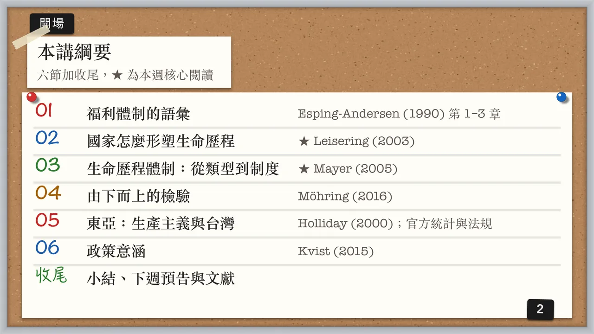
講解
順序是先給語彙，再給架構，再給證據，最後到東亞與政策。
01 只用一小段交代 Esping-Andersen 的兩個軸，因為 02 與 03 都建立在這套語彙上。
02 與 03 是本週的兩篇核心閱讀，篇幅最多。Leisering 給架構，Mayer 給證據，然後 Mayer 自己拆掉框架。
04 是一篇由下而上的實證檢驗。05 把前面的工具用到東亞與台灣。06 談政策架構。
課堂討論三次，分別放在 02、03、05 的結尾。
東吳大學社會學系 115 學年度第 1 學期｜生命歷程與社會政策
The welfare state as life course policy: welfare regimes, life course regimes and the East Asian experience
福利體制、生命歷程體制與東亞經驗
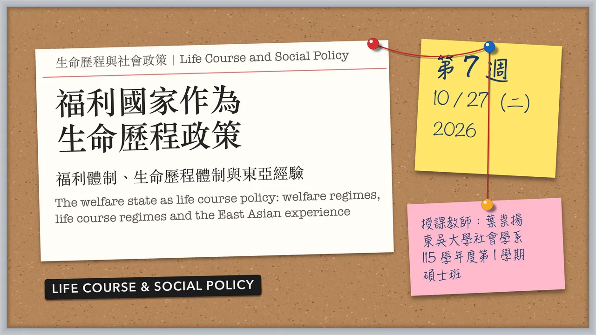
第 7 週，2026 年 10 月 27 日（二）。上週（10/20）停課。
主題依課綱：福利國家作為生命歷程政策：福利體制、生命歷程體制與東亞經驗。
核心閱讀兩篇：Leisering (2003) 與 Mayer (2005)。延伸閱讀四篇：Esping-Andersen (1990) 第 1–3 章、Möhring (2016)、Holliday (2000)、Kvist (2015)。

順序是先給語彙，再給架構，再給證據，最後到東亞與政策。
01 只用一小段交代 Esping-Andersen 的兩個軸，因為 02 與 03 都建立在這套語彙上。
02 與 03 是本週的兩篇核心閱讀，篇幅最多。Leisering 給架構，Mayer 給證據，然後 Mayer 自己拆掉框架。
04 是一篇由下而上的實證檢驗。05 把前面的工具用到東亞與台灣。06 談政策架構。
課堂討論三次，分別放在 02、03、05 的結尾。
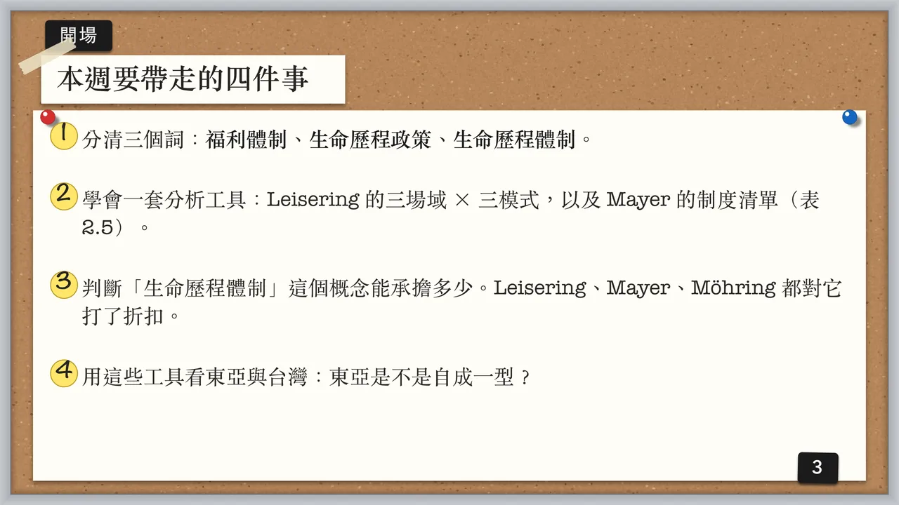
第一點是本週最基本的區分。
福利體制（welfare regime）是 Esping-Andersen 的概念：國家、市場、家庭在福利生產上的制度配置。
生命歷程政策（life course policy）是 Leisering 的概念：政治行動者有意改變生命歷程結構的政策 (Leisering 2003: 210)。
生命歷程體制（life course regime）是一國的生命歷程有某種反映制度結構的整體邏輯 (Leisering 2003: 215)。
第三點的三個折扣：Leisering 說只能在相當的保留下主張 (2003: 215)。Mayer 把它降為啟發式 (2005: 48)。Möhring 的實證分群只部分符合福利體制分類 (2016: 124)。
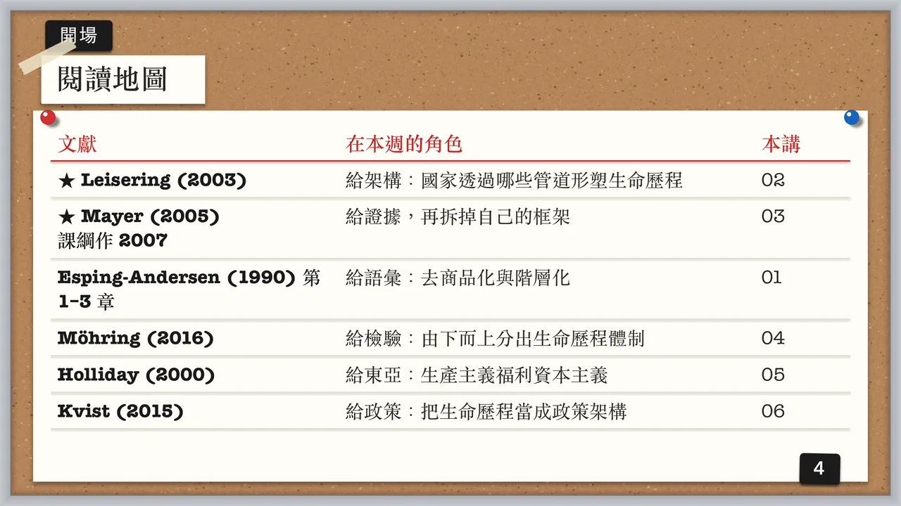
Mayer 的年份：PDF 書名頁印 2005，版權頁印「© 2005」與「Original Printing 2005」。課綱所附 DOI（10.1515/9780804767569-005）的 Crossref 紀錄出版日是 2007 年 1 月 5 日，對應的是電子版 ISBN 9780804767569。兩者頁碼相同（17–55），是同一文本。
分工的說法：Leisering 提供「國家透過哪些管道形塑生命歷程」的清單，Mayer 提供「這些管道在三國實際產生什麼結果」的證據。Mayer 在給完證據之後，提醒不要拿這些框架做因果推論 (Mayer 2005: 48)。
讀的順序建議先 Leisering 再 Mayer。
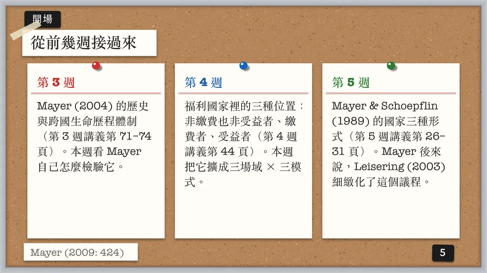
第 3 週：Mayer (2004) 表 1 的歷史生命歷程體制，表 2 的跨國四型（自由、保守、社會民主、家庭主義）。本週 03 節會看到這兩張表在 Mayer (2005) 的完整版，以及作者自己的收縮結論。
第 4 週：三種位置出自 Settersten & Mayer (1997: 248)，轉述 Mayer & Schoepflin (1989)。受益者不只出現在老年。
第 5 週：國家結構生命歷程的三種形式，是年齡規範、請求權、科層分格。
Mayer (2009: 424) 寫道，Leisering (2003) 顯著地細緻化了先前關於政策對生命歷程效果的理論建構（Mayer & Schöpflin 1989）。這是 1989 那篇的第一作者自己對 Leisering 的定位。
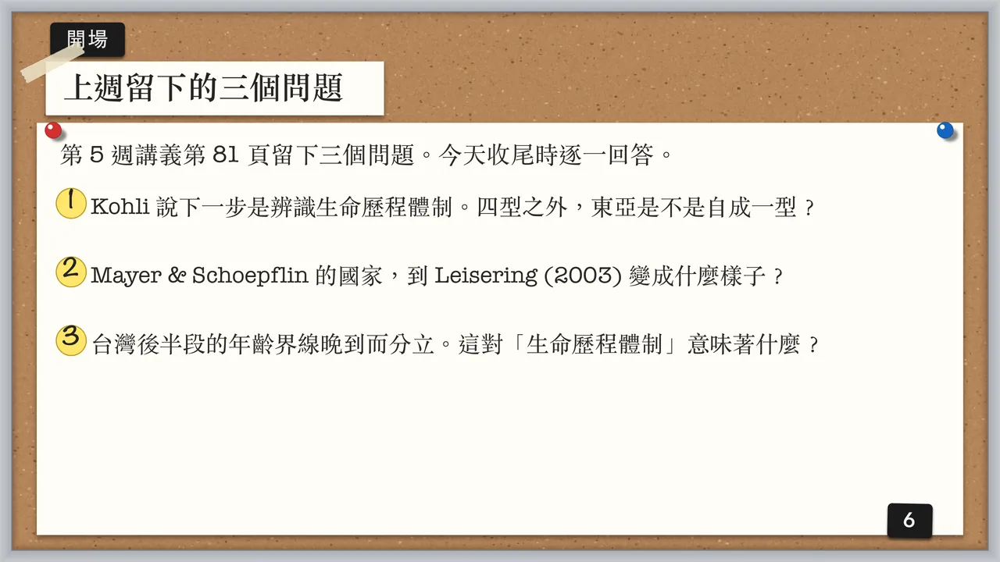
三個問題的出處：第 5 週講義的下週預告頁。
第一題連到 Kohli (2007: 260–261) 採用的 Mayer (2001) 四型。本週 05 節回答。
第二題本週 02 節回答：Leisering 把國家的角色從三種形式擴成三場域 × 三模式，並加上負向政策與去政治化。
第三題本週 02 節的年金四條件與 05 節的台灣制度一起回答。
第一節
The vocabulary of welfare regimes
這一節要回答 要比較福利國家，該比什麼？
本節文獻 Esping-Andersen (1990) 第 1–3 章
這一節是延伸閱讀，只交代後面兩節會用到的語彙。
第 1 章是理論，第 2 章是去商品化指數，第 3 章是階層化指數。頁碼都是英文原書刊印頁。
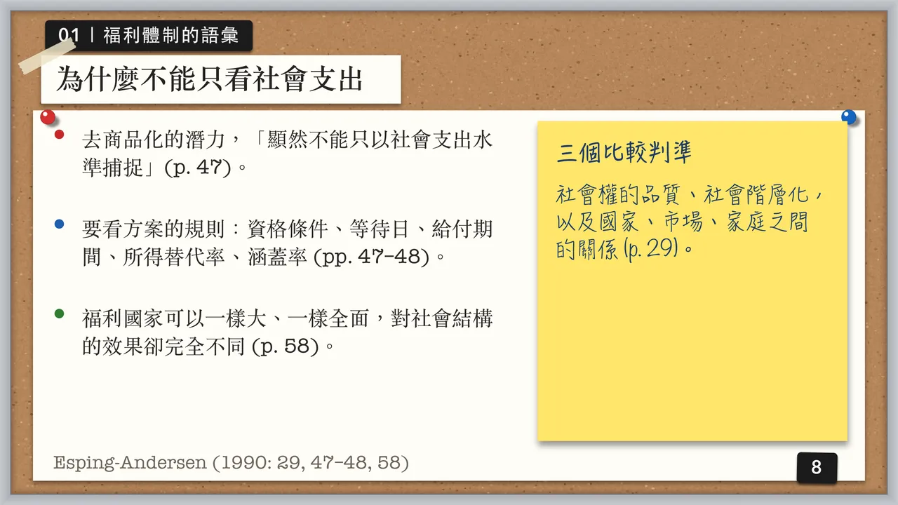
第 1 章批評以社會支出衡量福利國家：支出只是附帶現象，不同支出的意義不同。
p. 58 原文：welfare states may be equally large or comprehensive, but with entirely different effects on social structure. One may cultivate hierarchy and status, another dualisms, and a third universalism.
三個判準見 p. 29，Holliday (2000: 708) 也引用這一句。
這一點和生命歷程研究的關係：支出水準相同的兩國，可能把人的一生切得完全不同。
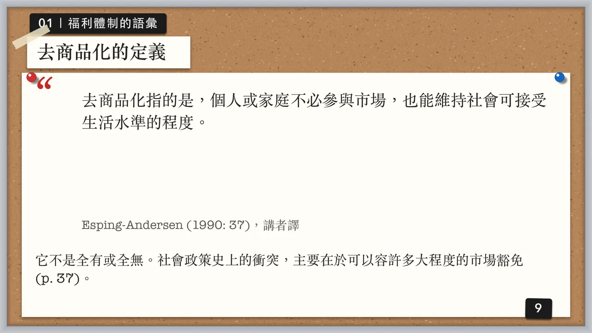
原文：the degree to which individuals, or families, can uphold a socially acceptable standard of living independently of market participation (p. 37)。
作者特別說明，去商品化不是完全消除勞動的商品性。
第 2 章接著區分三種歷史回應：保守主義的前商品化遺產、自由主義的回應、社會主義的去商品化政治 (pp. 38–47)。社會主義路線的特徵在社會權的品質與安排，不在社會權的存在本身 (p. 47)。
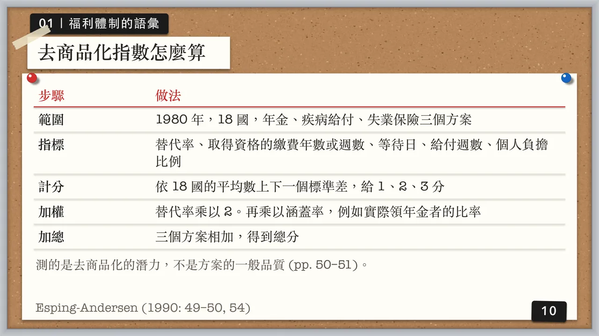
替代率乘 2 的理由：對任何人的工作與福利抉擇而言，預期所得水準絕對是決定性的 (p. 50)。
涵蓋率加權的理由：反映一個人擁有移轉權利的機率。方案再優渥，若只照顧一小群人，去商品化能力就有限 (p. 49)。
資產調查的年金（例如澳洲）在繳費期間一項計 0 分，涵蓋率權數給 0.5 (p. 54)。
德國分數不高的原因：繳費期長、個人負擔大、給付相對低 (pp. 50–51)。
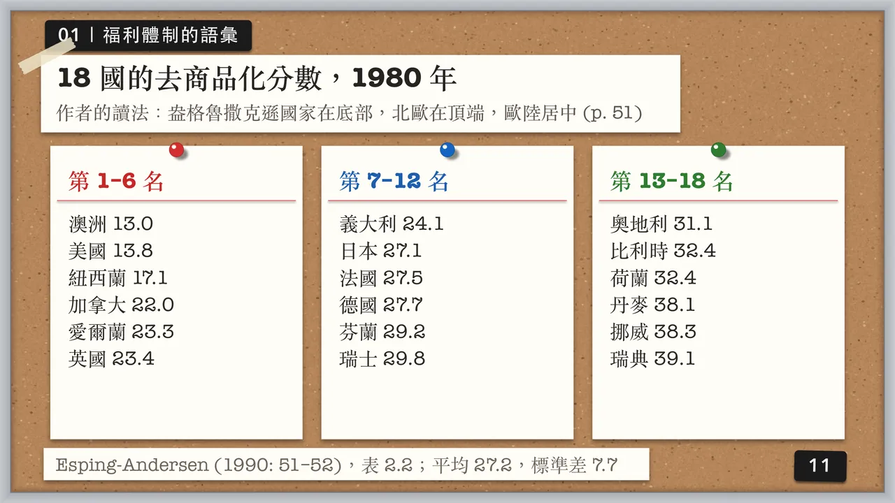
依表 2.2 原排序，每六國一欄只是為了排版，不是作者的分群。作者沒有印出分群的切點，只說大致依各國在平均數周圍的聚集分成三群 (p. 51)。
解釋：經濟發展水準與去商品化負相關，沒有解釋力。左派權力解釋約 40% 的變異 (p. 52)。歐陸的較高分數也來自保守與天主教改良主義的長期傳統。澳洲與紐西蘭勞工運動相對強卻分數極低，源於制度化自由主義的遺產 (pp. 52–53)。
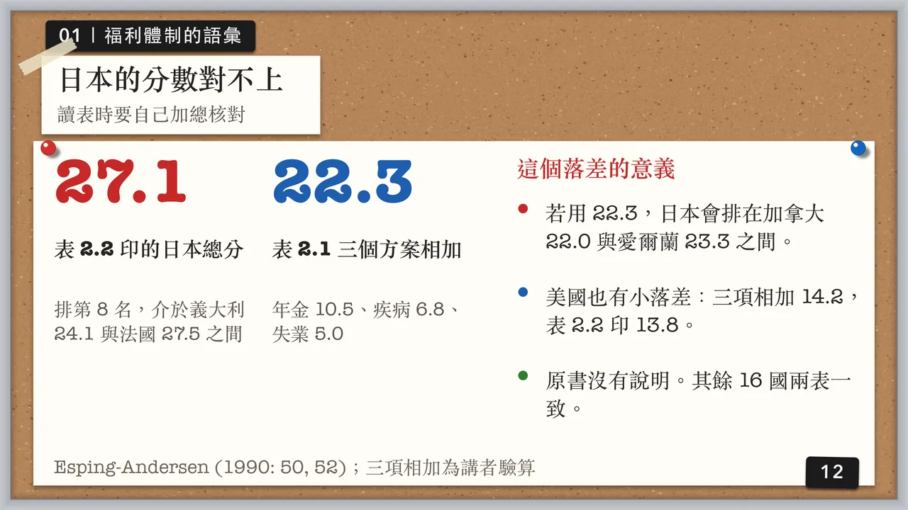
表 2.1（p. 50）：日本年金 10.5、疾病 6.8、失業 5.0。表 2.2（p. 52）：日本 27.1。
表 2.2 的平均 27.2 與標準差 7.7，是用印出的 27.1 與 13.8 算出來的。
這一頁有兩個用意。第一，讀量化文獻時要自己核對。第二，日本是 Esping-Andersen 十八國裡唯一的東亞國家，它的位置本來就不穩定。05 節會回到這一點。
作者在 p. 53 另指出，1930 與 1950 年的低去商品化群包括長期法西斯統治的義大利與日本。
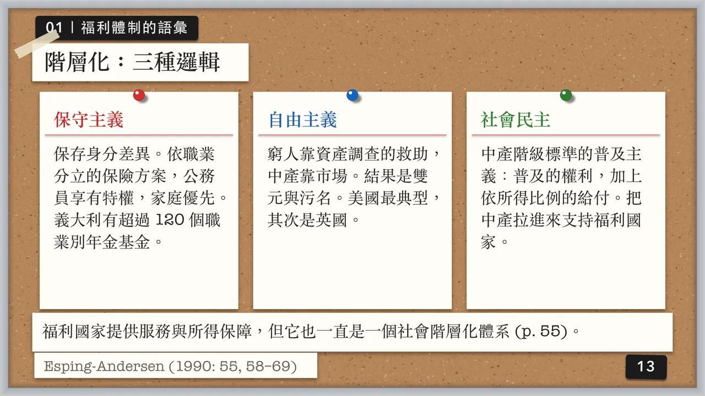
保守主義見 pp. 58–61。義大利 120 個以上職業別年金基金見 p. 61（引 Fausto 1978）。
自由主義 pp. 61–65：底層依賴污名化的救濟，中間是社會保險的客戶，特權群體主要從市場取得福利。這大致是美國、其次是英國的樣貌 (pp. 64–65)。
社會民主 pp. 65–69：瑞典社會民主黨首創中產階級標準的普及主義，使福利國家得到龐大民意多數的捍衛 (p. 69)。
第 3 章用七個方案屬性建構三個階層化指數。
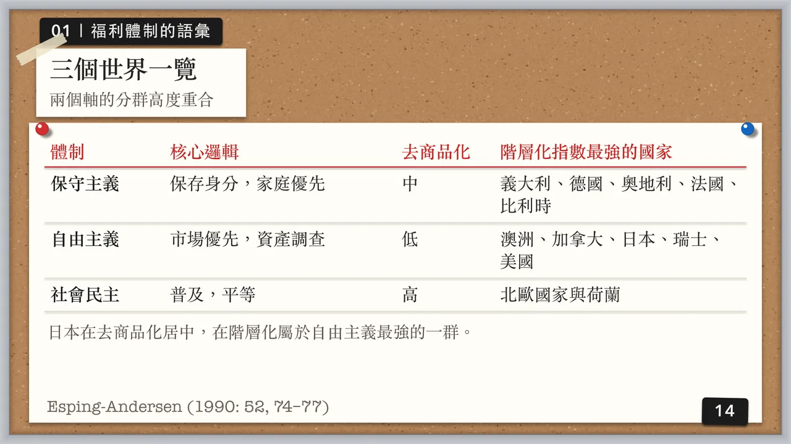
第四欄出自表 3.3 與 p. 76 的文字。保守高分國是義、德、奧、法、比。自由強國是澳、加、日、瑞士、美。社會主義群是斯堪地那維亞與荷蘭。
與去商品化的重合見 p. 77：斯堪地那維亞是高去商品化加強普及主義，盎格魯撒克遜是低去商品化加強個人自立，歐陸是統合主義與國家主義強、去商品化相當溫和。
日本的階層化分數：保守中（4）、自由強（10）、社會主義低（2）。
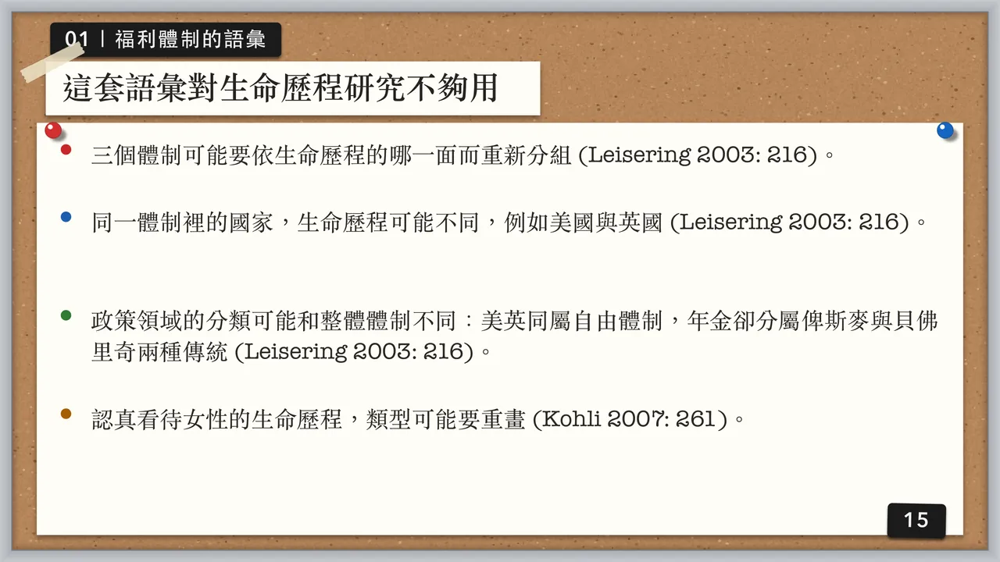
這一頁是 01 到 02 的橋。Leisering 和 Mayer 都使用 Esping-Andersen 的語彙，也都對它打了折扣。
Leisering (2003: 216) 的三重保留：三體制可能要依生命歷程的不同面向重新分組。體制內部異質。特定政策領域的分類可能與整體體制分類不同。社會救助方面可辨識出七種類型（引 Gough et al. 1997），年金方面有兩大傳統（引 Myles & Quadagno 1997）。
Kohli (2007: 261) 的限定已在第 5 週講過。
第二節
How government shapes the life course
這一節要回答 國家只是影響生命歷程，還是完成了它？
本節文獻 ★ Leisering (2003: 205–223)
Leisering, L. (2003). Government and the life course. In J. T. Mortimer & M. J. Shanahan (Eds.), Handbook of the Life Course (pp. 205–225).
正文到 p. 223，pp. 223–225 是書目。全章七節，表一張（表 10-1，p. 216），圖一張（圖 10-1，p. 212）。
Leisering 是 Bremen 大學生命歷程特別研究計畫的成員，也是《Time and Poverty in Western Welfare States》（Leisering & Leibfried 1999）的作者。本章是德國生命歷程研究與福利國家研究在英語世界的接合點。
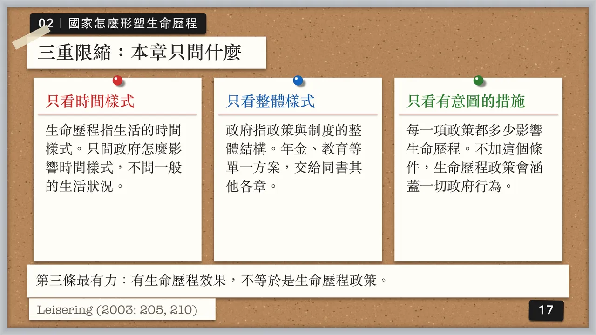
p. 205 原文：'life course' refers to temporal patterns of life. We only look for government influences on temporal patterns, not on individual lives in general.
第二條：Particular policies and programs, like old-age pensions, education, and labor force regulation, are dealt with elsewhere ... this chapter focuses on the overall impact and patterns.
第三條：we mainly look at measures intended to influence the life course ... every policy has at least a latent or indirect bearing on the life course.
p. 210 再強調一次：having actual life course outcomes is not enough for a policy to qualify as life course policy.
接著作者給福利國家下了比一組社會服務更重的定義：福利國家關乎法律、制度、價值與文化 (pp. 205–206)。
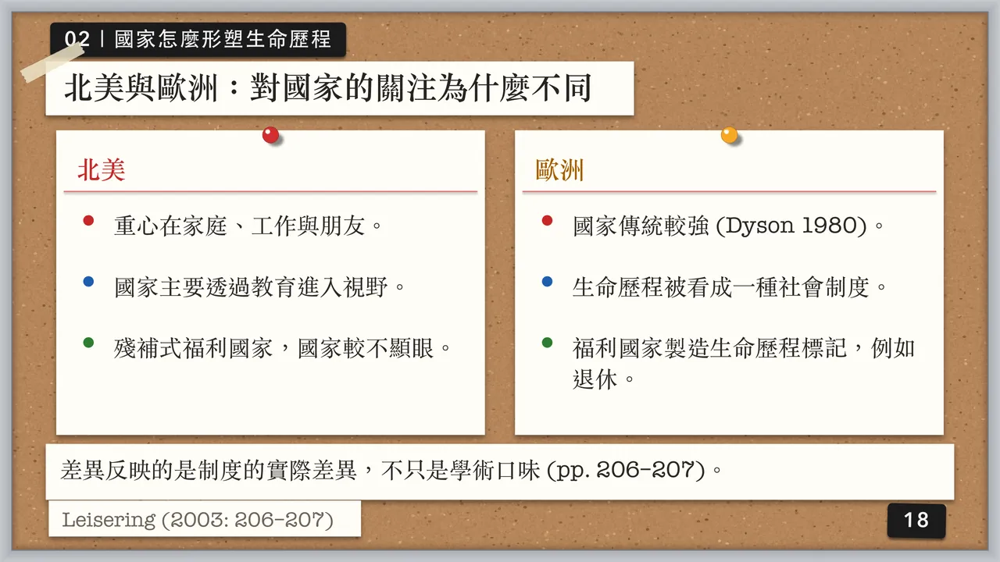
p. 207：歐洲把生命歷程看成 a new social structure in its own right, an 'institutional program' that defines a 'normal biography' (Levy, 1977)，而不只是 Elder (1999: 302) 所說的「社會界定、按年齡分級的事件與角色樣式」。
生命歷程標記：盛行且高度可預測的事件與轉銜（引 George 1993；Shanahan 2000）。p. 207：In the second half of the 20th century, the welfare state has emerged as a major creator of life course markers in many countries ... Retirement is the most important example.
p. 206 對美國的描述：殘補式福利國家，最後安全網較弱、較少權利基礎，失業給付期短，健保未普及。美國人一聽到 welfare 就想到給窮人與弱者的需求調查方案。
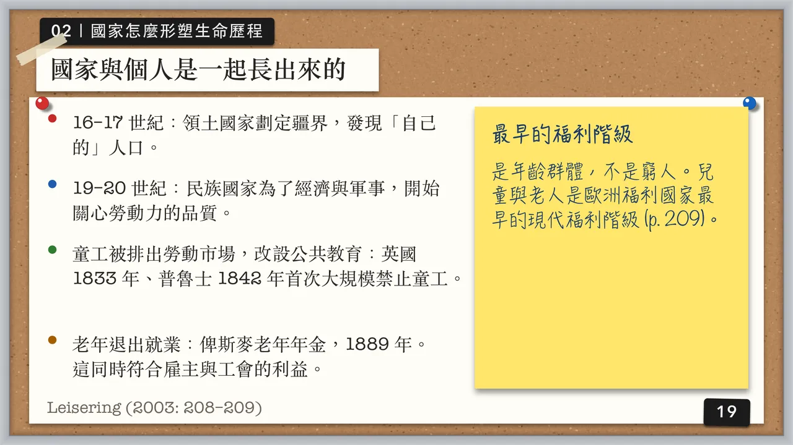
p. 208：現代國家（尤其在歐洲）與現代個人並非彼此對立地出現，兩者的興起緊密交織。
重商主義國家關心勞動力的數量，並致力增加人口。19–20 世紀的民族國家為了經濟與軍事目的，轉而關注勞動力的品質。三分化就在這個脈絡中形成 (p. 208)。
第四點原文 (p. 208)：The exclusion of old-age pensioners from employment served both the interest of employers in productive labor and of trade unions in keeping labor supply scarce.
p. 209 原文：Age groups—not the poor as such—were the first modern 'welfare classes' in European welfare states, namely the children (first major prohibition of child work in Britain in 1833, in Prussia/Germany in 1842) and the elderly (Bismarckian old-age pensions in 1889).
國家建構的三個事例 (p. 208)：德意志帝國的俾斯麥社會保險（1883–1889）、英國 1940 年代末的福利國家、美國 1930 年代的新政。美國在 1930 與 1960 年代的推進，作者形容為猶豫而局部。
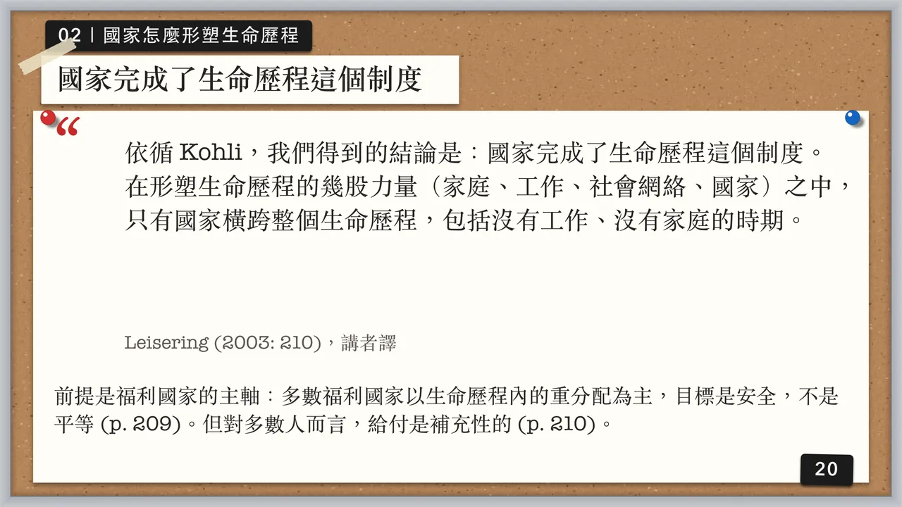
原文 (p. 210)：Following Kohli we are led to the conclusion that the state completes the institution of the life course. Out of the major forces that shape the life course—family, work, social networks, state—the state is the only overarching agency that extends to the entire life course, including periods of non-work and lack of a family. The state may impinge on the life course at any point, 'from cradle to grave'.
completes 這個動詞是 Leisering 對 Kohli 的定位：不是取代，是補完。Kohli (1987) 的道德經濟論：工資勞動無法覆蓋整個生命歷程，只有退休所得作為一生勞動的公正回報，才讓工作社會在道德上被接受 (p. 209)。Leisering 說這個論證是文化特定的。
p. 209：redistribution across the life course dominates in most welfare states. The aim is security rather than equality.
p. 210 的自我設限：只有長期受助者、住在機構或庇護工場的人，才長期走在福利國家的軌道上。福利給付多半是補充性的，因此福利國家的正當性弱於市場經濟與核心家庭。這是理解本節最後「去政治化」的前提。
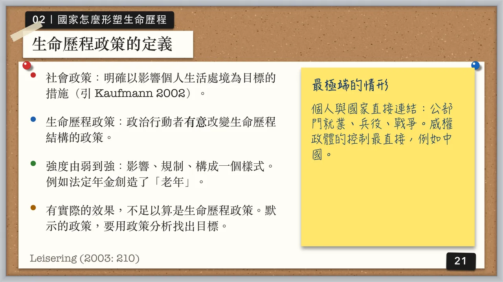
定義原文 (p. 210)：Policies intended by political actors to change the structure of the life course may be termed 'life course policies'（引 Leisering & Leibfried 1999）。
強度光譜：only affect certain aspects → regulate them → constitute a pattern，例如 the creation of old age by statutory old-age pensions in some welfare states。
Mayer (1991) 只接受個人與國家直接連結的情形為嚴格意義下國家構成的生命歷程。
p. 210 另補一個時間維度：生命歷程樣式也是早期政策的制度遺產。歐洲各國進入護理之家的轉銜率差異，無法完全由當前政策、價值或人口變項解釋。
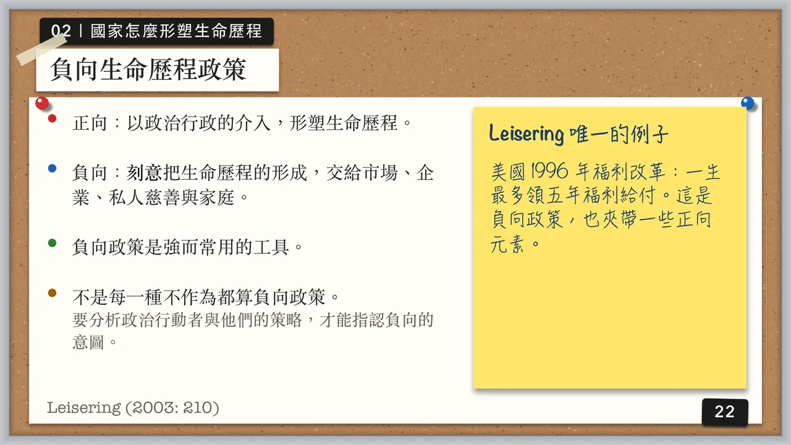
原文 (p. 210)：A policy which does not aim to shape the life course by politico-administrative intervention (which would be 'positive' life course policy) may still influence the life course, but in a 'negative' way—by intentionally leaving the formation of the life course to non-state forces such as markets, private companies, private charity, and to the family. Negative policy is a powerful and frequently used tool. But again, not every non-policy is negative policy in this sense. An analysis of political actors and their strategies is required to uncover and specify the negative intention.
例子原文：A unique example of negative life course policy (combined with some positive elements) is the restriction of welfare receipt to a maximum of 5 years in a life time, enacted in the welfare reform of 1996 in the United States.
一種讀法：五年上限是對生命歷程的直接規制，五年之後的生活安排則刻意交還市場與家庭。
常見的兩種誤解：一是不作為怎麼會是政策，二是把所有不作為都算成負向政策。兩者都要避免。要件是可考的政治意圖。
Möhring (2016: 126, 130) 用這個概念描述南歐：國家缺席，使生命歷程更受市場與家庭影響。
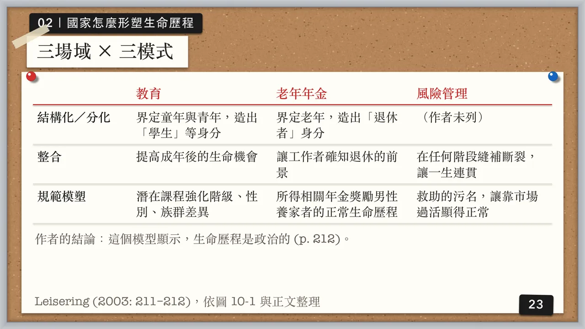
三個場域 (p. 211)：教育、老年年金、風險管理系統。風險管理包括失業保險、職災保險、健康保險與服務、社會救助、個人社會服務（如治療與諮商）。
三種模式 (p. 211)：結構化／分化、整合、規範模塑。each set of programs involves two or three modes of operation。圖 10-1 把三種模式畫成三層洋蔥皮。
表中的格子是講者依正文整理：結構化只舉了教育與年金。風險管理的整合原文是 They 'mend' the life course, thus producing continuity across the entire life course。
規範模塑 (pp. 211–212)：德國尤其因此產生男女兩種正常傳記。對女性而言，工作社會的三分模型（為工作做準備、工作、退休）不完全適用。
p. 212–213：既有研究只各看一個場域。教育的引導功能由流動研究處理，教育的文化功能由 Meyer 的「自我」處理，年金的安全功能由 Kohli 的制度化論處理，風險管理只在邊緣群體的傳記研究中受到注意。國家形塑的生命歷程，只有看三者的互動才能理解 (p. 213)。
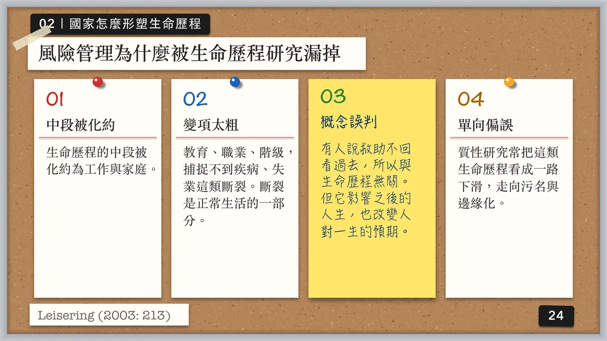
p. 213：風險管理 has until recently been almost totally overlooked by students of the life course（唯一例外是 Hirschhorn 1977）。
第三點駁回 Allmendinger & Hinz (1998: 64)：他們說社會救助這類 situational programs 有 life course indifference。Leisering 回應：such programs do impinge on the subsequent life course and, through anticipation, change the structure of expectations of the individuals vis-à-vis the entire life span.
本節結論句 (p. 213)：Though impinging situationally, systems of risk management shape the expectations of the citizens and thus secure the unity of the life course as a whole.
這個「透過預期起作用」的機制，支撐了後面「生命歷程敏感／生命歷程相關」的兩維區分 (p. 217)。
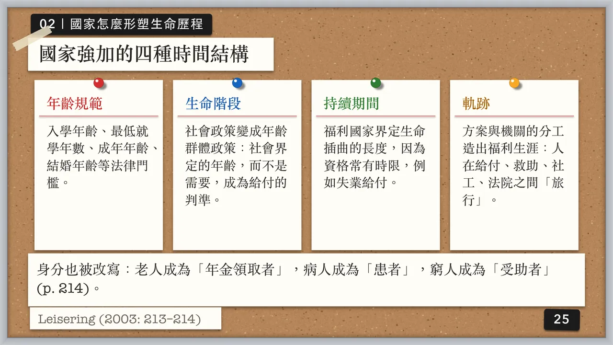
四種新時間結構在原文編號 (1)–(4)，見 p. 214。
身分改寫 (p. 214)：老、少、病、障、貧成為一種法律身分，記載在證件上，連到特定服務的資格，受行政人員與社會專業人員控制。後果是意義變窄，以及條件的數量化與二分化，例如老／不老（能否領年金）或「60% 失能」。但作者也注意到反向趨勢：資格越來越分化而彈性，例如各種階段的提早退休。
第二點原文：Socially defined age—rather than need—becomes a criterion for benefits and services.
第一點延續第 5 週 Mayer & Schoepflin (1989) 的年齡規範。
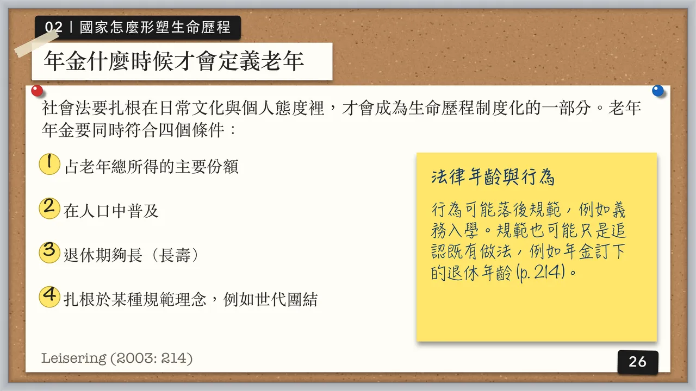
原文 (p. 214)：Social law becomes part of the institutionalization of the life course only if it becomes entrenched in the everyday culture and attitudes of the individuals. Old-age pensions, for example, only come to dominate the social definition of old age when pensions account for a major share of total income in old age, when they are widespread in the population, when there is a long period of retirement (longevity) and when they are rooted in a normative idea such as intergenerational solidarity.
右欄引 Mayer & Schoepflin (1989: 198 f.)，第 5 週講過。
這四個條件是本週套到台灣最直接的工具。05 節與討論 ① 會用到：台灣的勞保年金、國民年金、公教年金，各符合幾條？
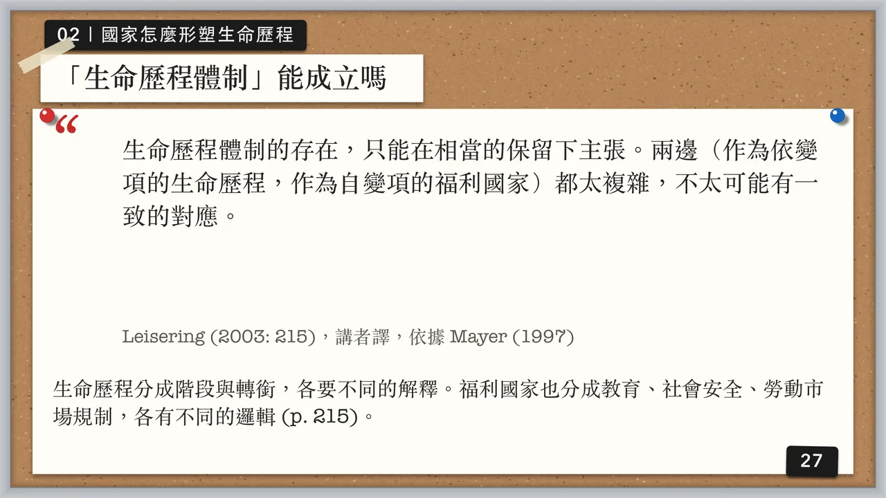
原文 (p. 215)：The existence of life course regimes can only be asserted with considerable qualification (for the following see Mayer, 1997). Both sides—life course as the dependent variable and welfare state as the independent variable—are too complex to make a uniform correspondence likely.
同頁的第一個方法論問題：政策到底有沒有用？還是經濟繁榮、人口變遷、文化價值就足以解釋各國差異？作者的答覆是推論：政策在一國有用，就可預期它在國家之間造成差異，但不同制度也可能導致相似結果。
兩種取徑的分工 (p. 215)：社會政策分析以福利國家一側為中心（Leisering & Leibfried 1999），用制度與質性資料。政治經濟學以生命歷程一側為中心、重點在就業生涯（Mayer 等人），用量化縱貫微觀資料，但只以一般方式指涉制度。
03 節會看到，Mayer (2005: 33) 也把 Leisering 列為三種類型學提案之一。
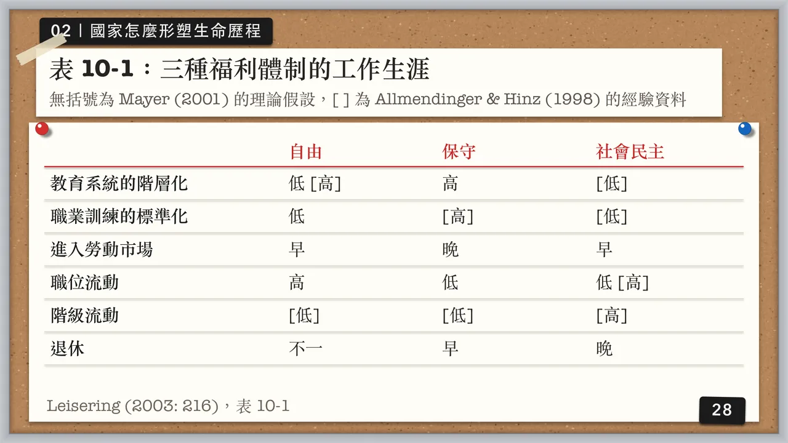
表註：Source: Mayer (2001, 102, based on theoretical hypotheses); Allmendinger & Hinz (1998, 78, based on empirical data from Mayer's Eurocareers project for Britain, Germany, and Sweden). […]: from Allmendinger & Hinz.
作者的摘要 (p. 216)：自由體制的工作生涯長而鬆散，保守體制短而緊密。社會民主體制的工作生涯也長，但職位流動較少、階級流動較多。
讀表提醒：這張表不是一張統一的經驗表。理論假設遇到資料時會破，這一點本身就值得細看。
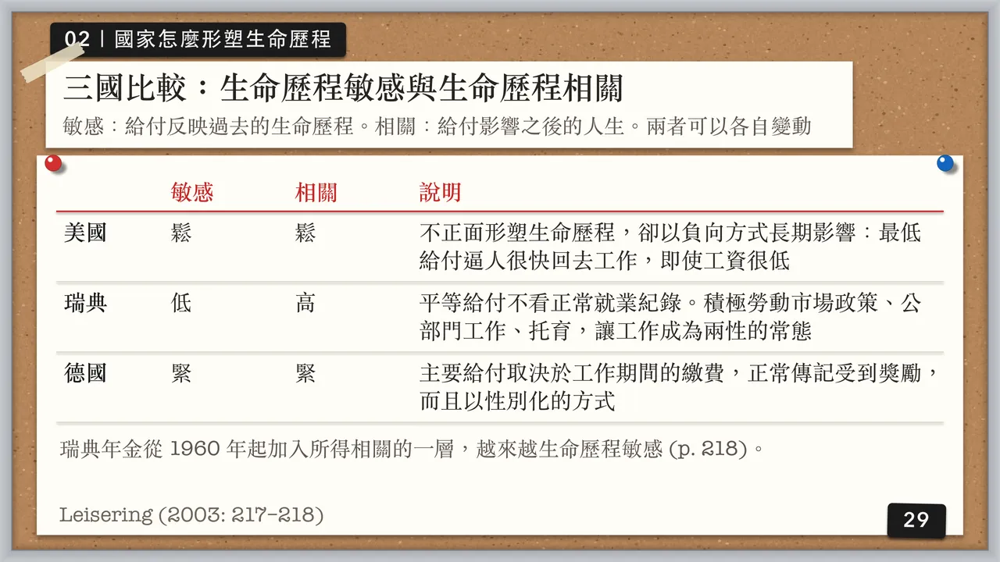
兩維的定義 (p. 217)：a welfare program can be called 'life-course sensitive' if benefits reflect previous life course patterns of the recipients. It is 'life-course relevant' if it exerts an impact on the subsequent life of recipients. Programs can differ along both dimensions independently.
美國 (p. 217，引 Leisering & Leibfried 1999: 48–51)：They do not positively shape individual life courses. But the American system does have lasting effects on life courses, in a 'negative' manner. 1996 年改革進一步限縮現金救助，同時改善低薪者的支持，例如托育補貼與健康保險。
瑞典 (pp. 217–218)：The state ensures that a working career is the norm in the lives of both sexes.
德國 (p. 218)：More than in many other welfare states, this is done in a gendered way—differences between male and female life courses are reinforced by social policy.
場域的差異 (p. 217)：美國優先教育，德國以社會安全為中心，風險管理在英德強於美國。德國的例外是讓女性兼顧家庭與工作的個人社會服務。
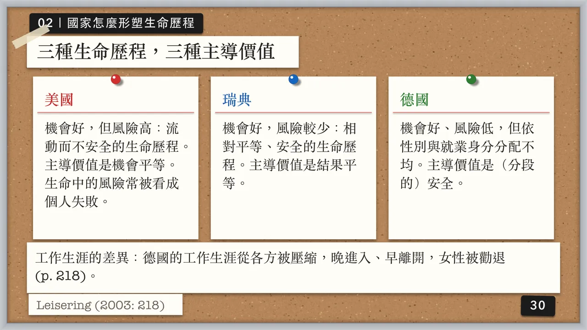
原文 (p. 218)：美國 offers good opportunities but high risks for its citizens, adding up to a fluid and insecure life course. The key value is equality of opportunity. Risks in the life course tend to be seen as evidence of personal failure. The poor are often categorized as 'deserving' and 'undeserving'.
瑞典 also offers good opportunities but with less risks attached—a comparatively egalitarian, secure life course. Equality of outcomes is the leading value.
德國 also offers good opportunities and low risks, but both are unequally distributed with regard to gender and employment status. The key value is (segmented) security.
不平等樣式 (p. 218)：美國是雙元結構，德國的社會安全依職業分立，瑞典以平等普及的服務為特徵。
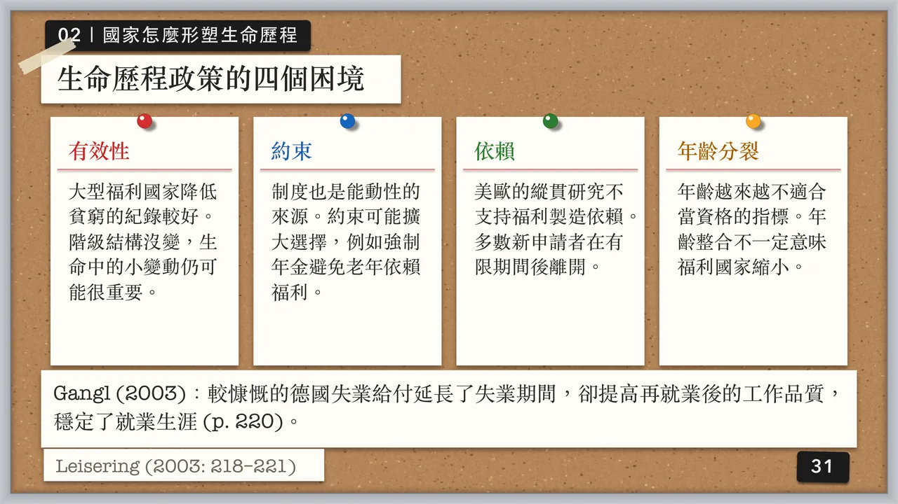
四問 (p. 218)：政府能多大程度真正影響生命歷程？生命歷程政策是否過度約束生命？是否使人依賴？是否助長年齡受限的生命歷程，製造年齡分裂？
有效性 (p. 219)：These are empirical questions。作者轉述 Schmidt (2001) 與 Korpi & Palme (1998)。福利國家削弱個人責任感的假設，多數研究不支持。社會政策不能預防犯罪與偏差。關於削弱自助的證據則有正有反。
約束 (pp. 219–220)：引 Giddens (1991)：存在的問題在制度上被壓抑，同時又為社會活動與個人發展創造新的機會領域。這種矛盾不是社會政策獨有，市場與大企業也一樣。
依賴 (p. 220)：美德的跨國比較發現，較慷慨的給付（德國）並不導致較長的領取期間。許多單親母親與離婚女性把福利當成在危機中重新定向的資源。
Gangl 的例子是本週最好的例證之一：同一個給付制度，在靜態指標上看是延長失業，在生命歷程指標上看是穩定就業生涯。
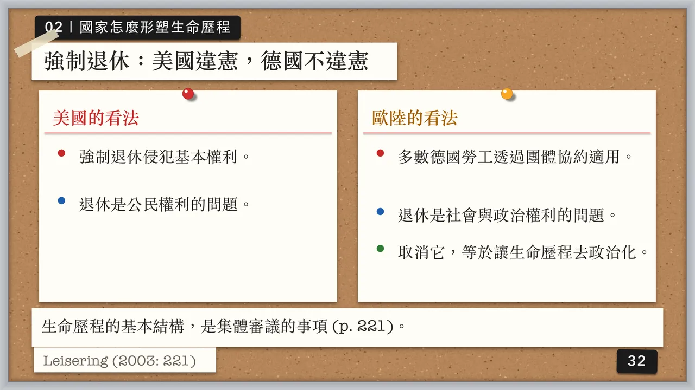
原文 (p. 221)：Mandatory retirement is a case in point. In contrast to the United States, it is not unconstitutional in Germany. The majority of German workers is subject to mandatory retirement through collective labor agreements between employers and the trade unions. What to American observers may appear as an undue infringement of basic rights, appears in a different light in the strong state tradition in Continental Europe. In this view giving up mandatory retirement would imply an undesirable depoliticization of the life course ... Americans view retirement as a matter of civil rights while Europeans view it as a matter of social and political rights.
這一頁用 T. H. Marshall 的三種權利（公民、政治、社會）來分類。
想一想：台灣把退休放在哪一類權利底下？
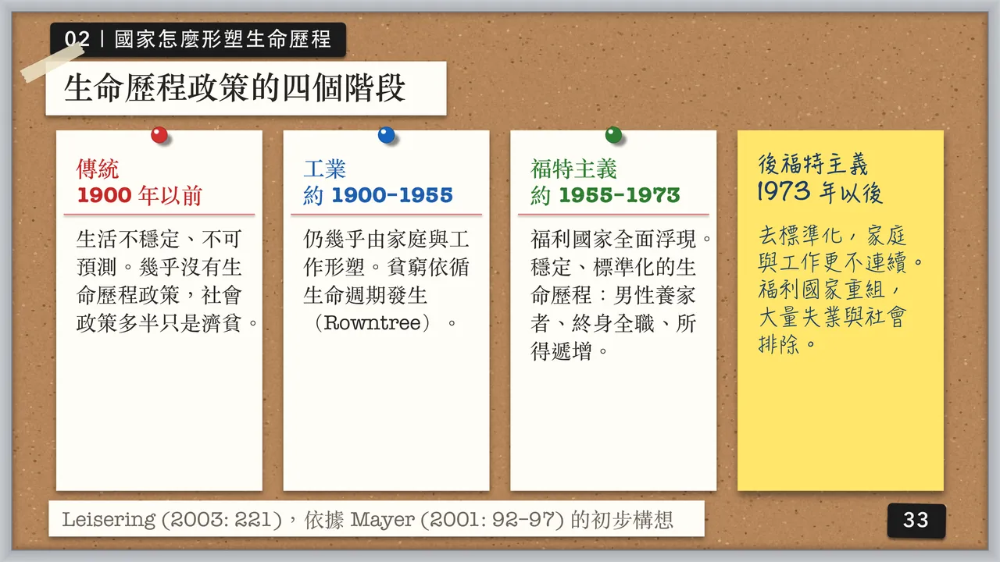
這四階段的年代只出現在 Leisering (2003: 221)。Mayer (2005) 表 2.1 有同源的四型，但不給年代。第 3 週講義第 71–72 頁講過 Mayer (2004) 的版本。
福特主義 (p. 221)：characterized by a stable and standardized life course, based on the male breadwinner and the nuclear family, lifelong full employment, and income progression（引 Myles 1990）。名稱來自汽車業的工業就業結構。
後福特主義：歐洲的對應是「正常傳記的侵蝕」、不連續傳記與個人化的辯論（Beck 1992；Shanahan 2000），美國則有 disorderly lives 的辯論。
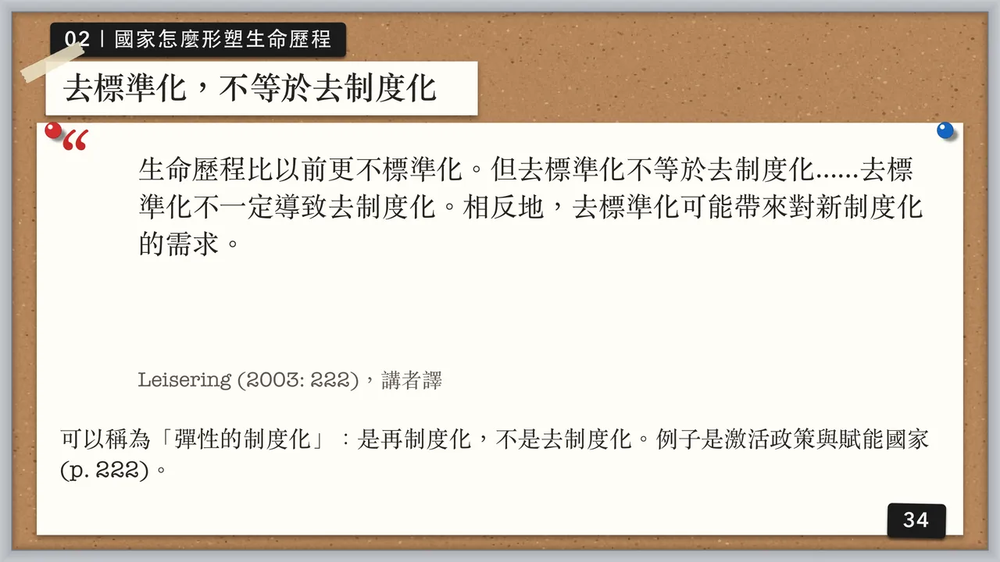
原文 (p. 222)：Life courses are less standardized than earlier (Shanahan, 2000). But destandardization is not the same as deinstitutionalization. Standardization refers to 'the degree to which … life patterns exhibit regularity, especially with regard to the timing of major life experiences', while institutionalization refers to the structuration of lives by social institutions and the state and its policies (Settersten, 1999, 253 f.). Destandardization, then, need not lead to deinstitutionalization. To the contrary, destandardization may induce demands for novel institutionalization.
這一頁直接接第 5 週。這兩個詞常被當成同一趨勢的兩種說法。標準化測的是人的行為分布，制度化測的是制度的覆蓋與力道，兩者可以反向移動。
作者的預測 (p. 222)：生命歷程越彈性，風險管理系統越重要。年金這類長期給付可能被縮減與重組。
激活：從舊式重分配福利國家，轉向投資人力資本、讓人自助的社會服務。flexicurity 與 employability 進入政策辯論。賦能國家：國家讓非國家機構提供服務，但這帶來新的監理任務，不是福利國家的拆解。
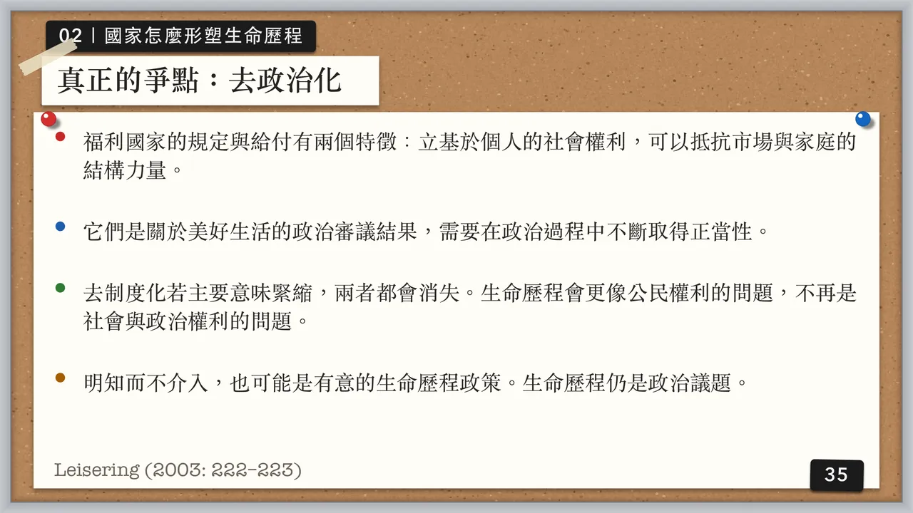
原文 (pp. 222–223)：To the extent that the life course would or should be deinstitutionalized and the welfare state retrenched, the life course would be depoliticized. Welfare state regulations and provisions differ from other (formal and informal) types of provision on two accounts: they are grounded in individual social rights (entitlements) to withstand the structural forces of markets and families; and they are the outcome of political deliberations about a good life and constantly require legitimization in the political process. Deinstitutionalization—if mainly defined as retrenchment rather than restructuring—would do away with both. The life course would become more a matter of civil rights and less of social and political rights.
最後一句 (p. 223)：Knowingly not interfering may also be an intentional life course policy. Therefore, life course policy keeps cropping up as a matter of political controversy. The life course remains a political issue.
首尾呼應：p. 212 說 The model shows that the life course is political，p. 223 說 The life course remains a political issue。
回答上週第二個問題：Mayer & Schoepflin 的國家是無意間結構生命歷程。到 Leisering，國家有意圖的介入與有意圖的不介入，都成為政治選擇。
第一題的關鍵是 p. 210 的要件：要分析政治行動者與他們的策略，才能指認負向的意圖。提示：可以找立法說明、部會文件、政黨主張這類證據。
第二題沒有標準答案。05 節會給幾個台灣制度的事實，例如就業保險的給付期間與社會救助的家庭範圍，可以回頭對照。
第三題四條件：占老年所得的主要份額、普及、退休期夠長、扎根於規範理念 (p. 214)。可以先判斷每一條需要什麼資料。
第三節
Life course regimes: from typologies to institutions
這一節要回答 生命歷程的跨國差異，能歸因到「體制」嗎？
本節文獻 ★ Mayer (2005: 17–55)
Mayer, K. U. (2005). Life courses and life chances in a comparative perspective. In S. Svallfors (Ed.), Analyzing Inequality: Life Chances and Social Mobility in Comparative Perspective (pp. 17–55). Stanford University Press. 課綱著錄為 2007，見開場的閱讀地圖。
本章五節加結論，表七張、圖三張。作者自述是文獻回顧，重點放在瑞典、（西）德、美國三國 (p. 20)。
本章的結構要先預告：前三節把生命歷程體制的框架建到最強，第四節開頭作者自己轉向，第五節用三個例子檢驗，結論把體制降級為啟發式。讀到第四節，很容易以為前面白讀了。這種先建最強版本、再檢驗它撐不撐得住的寫法，本身值得學。
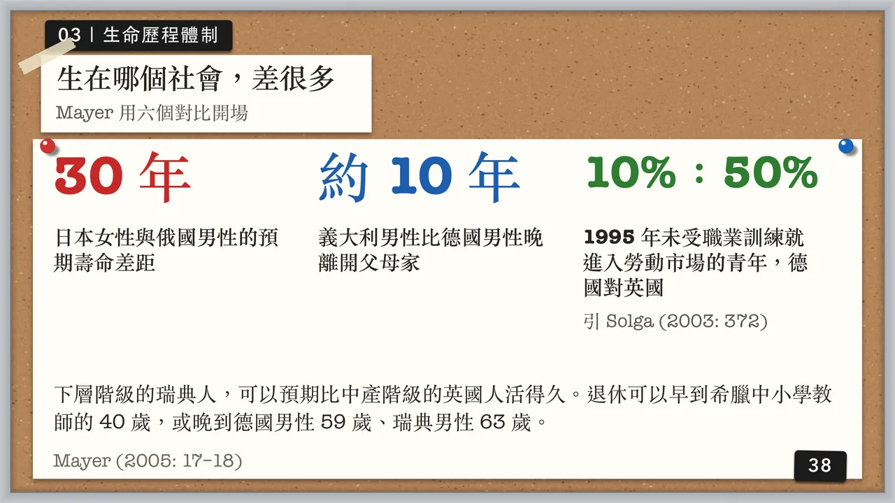
原文開場 (p. 17)：The very fact that it makes quite a difference into which society one is born into (or has been adopted into) is hardly disputed.
第二個對比在 pp. 17–18：a person can expect to live longer as a lower class Swede than a middle class Brit。這一句把國別差異放到階級差異之上。
作者自己說這些是 particular and anecdotal evidence (p. 18)。真正的問題在後面兩問與八項要求。
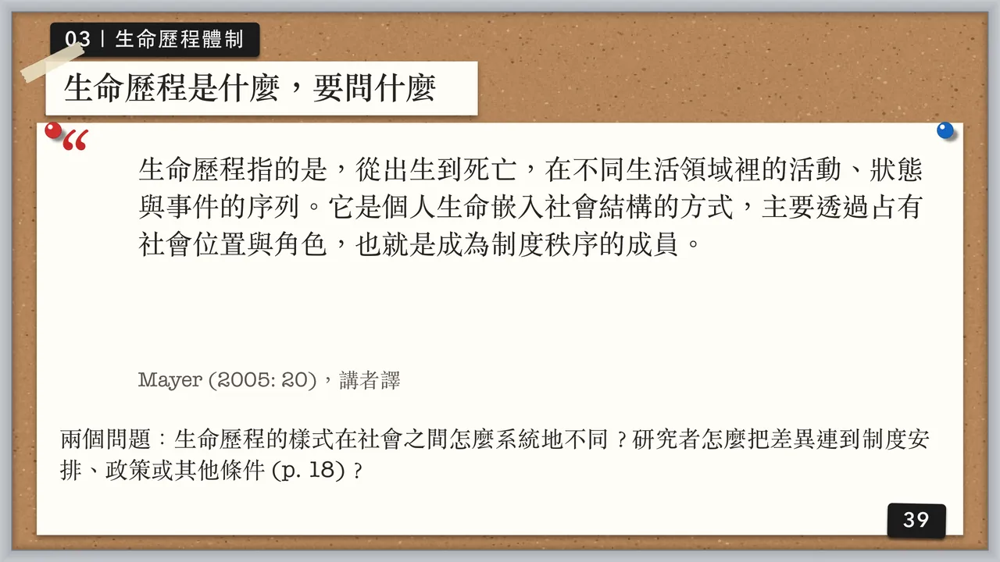
原文 (p. 20)：By the term life course sociologists denote the sequence of activities, or states and events, in various life domains spanning from birth to death. The life course is thus seen as the embedding of individual lives into social structures primarily in the form of their partaking in social positions and roles, that is, in regard to their membership in institutional orders.
同段：生命歷程的重要面向是內部的時間順序，也就是在各狀態停留的時間，以及各事件或轉銜的年齡分布。
八項要求 (p. 18)：①界定生命歷程屬性。②證明各面向在一生中有內部依存。③證明生命歷程各面向有非隨機的共變，即「體制」。④嚴謹且可比較的測量。⑤以制度變項取代國名。⑥證明制度條件之間有一致性，即制度側的「體制」。⑦宏觀條件、生命歷程結果及兩者的關聯都要夠穩定。⑧用微觀與過程資料證明因果連結。
本章後半的收縮結論，正是因為第 3、6、7 項過不了關。第 5 項「以制度變項取代國名」是本章最重要的方法論口號。
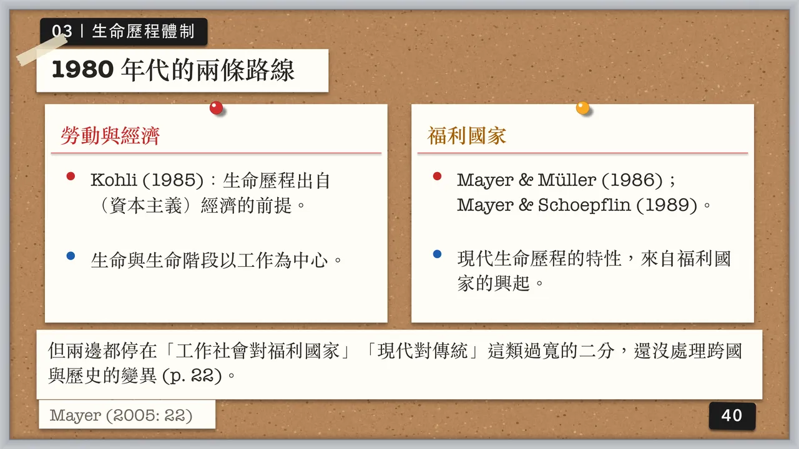
原文 (p. 22)：On the one hand, Kohli (1985) and others tried to demonstrate how life courses derive from the prerequisites of (capitalist) economies, where lives and life stages center around work. On the other hand, the uniqueness of modern life courses was derived from the emergence of the welfare state (Mayer and Müller 1986; Mayer and Schoepflin 1989). But even during this stage, very broad categories and dichotomies like 'the work society' versus 'the welfare state' and 'modern' life courses versus 'traditional' life courses were the focus of the debate rather than issues related to cross-national and historical variation.
這是第 5 週「勞動市場還是國家」之爭的第三份證詞。Kohli (2007: 259–260) 判它為虛假的爭論，Leisering (2003: 209–210) 把 Kohli 的論證當成國家角色的前提，Mayer 在這裡把它降為過寬的二分。
作者接著提出「差異生命歷程社會學」：類比一般心理學與差異心理學，區分人類發展中可假定為普遍的部分，與個人生命之間的差異 (p. 23)。
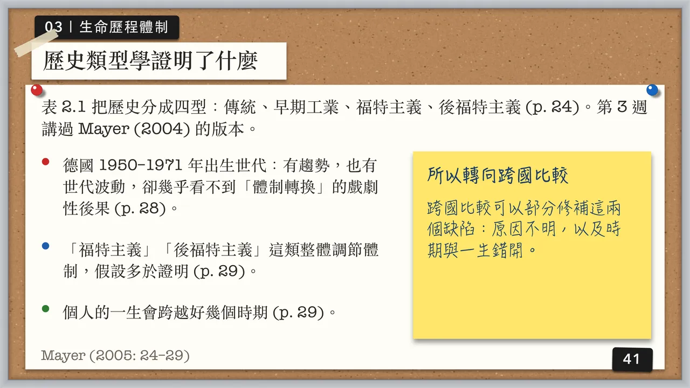
表 2.1 的四型與 Leisering (2003: 221) 的四階段同源，都出自 Mayer (2001)。表 2.1 不給年代。
表 2.2（p. 29）是本章唯一的量化表：德國 1950–1971 年出生世代。初婚中位年齡上升約五年，初職年齡上升約三年，離家年齡幾乎不變 (p. 28)。本週不展開，因為第 5 週 Brückner & Mayer (2005) 已用同源資料講過。
p. 28 原文：What analysts can observe then ... appears to be a mixture of robust trends and non-trend-like cohort variation, but scarcely any indication of the dramatic consequences of a 'regime change,' such as the breakdown of the Rhenish model postulated in the political economy literature.
p. 29：'Cohorts' or 'historical periods' mark differences, but the assumptions as to what causes such differences remain foggy ... the lifetimes of individuals are likely to extend beyond postulated period boundaries. 童年、成形期、退休可能各在一個時期。
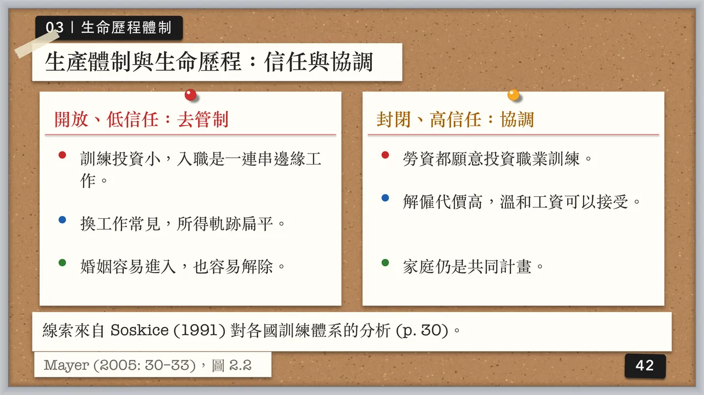
這一頁談生產體制。Mayer 本章第三節的標題就是 welfare regimes, varieties of capitalism, and life course outcomes (p. 30)。
左欄 (pp. 30–31)：社會關係中預先投入的信任少，互惠義務低，傾向短期。國家不太承擔職業訓練的責任，個人與企業的訓練投資都小，沒有跨企業認可的證書。學校到工作是一連串邊緣工作，夾著失業。工人以工作保障與工作品質換取工資，雇主極大化利潤、極少投資人力資本。因為重視富裕勝過安全，婚姻與離婚更緊扣所得預期。離婚女性與單親母親常要再婚以免貧窮。
右欄 (pp. 31–33)：強工會與雇主協會、緊密社群、國家較積極。企業預期工人會留任夠久，所以願意投資訓練。解僱代價高，重整靠自然離職。溫和的工資可以接受，因為大量生命風險由福利給付覆蓋。家庭仍是共同計畫，嵌在地方網絡裡。
圖 2.2 (p. 31)：Open/Low Trust 對應勞動市場的（再）商品化與去管制。Closed/High Trust 對應勞動市場的去商品化與統合或彈性協調。
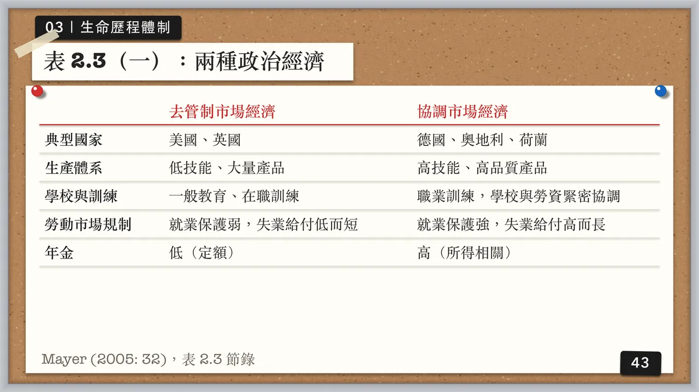
原表有 11 列，分兩頁節錄。略去的是金融與經濟治理、勞資關係、職位與流動結構、所得流動。
表註的來源：Allmendinger & Hinz 1998；Ebbinghaus 2002；Mayer 1997, 2001；Soskice 1991。
生產體系一列原文：Low-Skill Production; Mass Products; Numeric Flexibilization 對 High-Skill Production; High-Quality Products; Flexible Specialization。
年金一列原屬勞動市場規制：Low (flat) Pensions 對 High (Earnings-Related) Pensions。
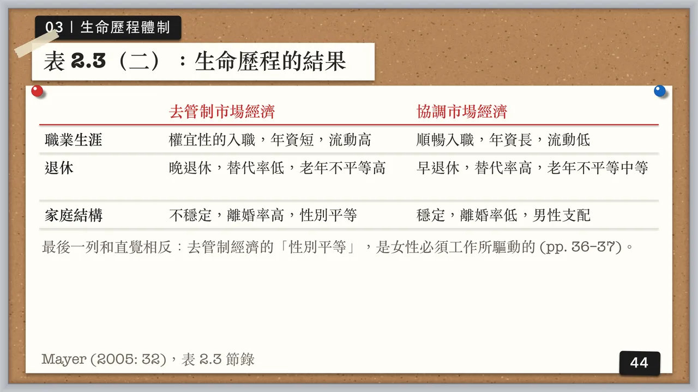
最後一列值得停一下：去管制經濟被標為性別平等，協調經濟被標為男性支配。作者的解釋在 pp. 36–37：美國女性的就業機會較佳、軌跡較連續，但 women's work is hardly optional, because their share in the family budget is badly needed。
職業生涯一列原文：Stop-Gap Labor Market Entry; Short Tenure; High Turnover; Unstable, High Interfirm Job Shifts; Upward/Downward Mobility 對 Smooth Labor Market Entry; Long Tenure; Low Turnover; Stable, Low Interfirm Job Shifts; Mostly Upward Mobility。
職位結構：去管制是個人主義流動體制，報酬綁個人技能與生產力。協調是集體主義流動體制，報酬綁職位特性。
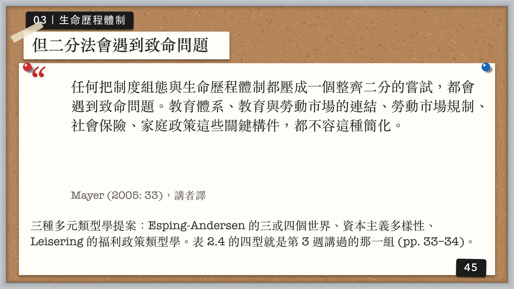
原文 (p. 33)：However, any such attempt to collapse both institutional configurations and life course regimes into a neat comprehensive dichotomy must encounter fatal problems. The crucial institutional building blocks of educational systems, education-labor market linkages, labor market regulations, social insurance provisions, and family policies defy such easy reductionism in regard to macro contexts.
三種提案 (p. 33)：①Esping-Andersen (1990, 1999)。②資本主義多樣性（Crouch 2001；Crouch & Streeck 1997；Hall & Soskice 2001；Ebbinghaus & Manow 2001）。③福利國家政策的類型學（Leisering & Leibfried 1999；Leisering 2003）。
表 2.4 (p. 34) 的四型：自由市場國家、歐陸保守福利國家、斯堪地那維亞社會民主福利國家、南歐福利國家。這就是 Kohli (2007: 260–261) 採用的 Mayer (2001) 四型。註 6 (p. 49)：這些群集應當成假設，而不是充分檢驗過的證據。
圖 2.3 (p. 35) 另有五型樹狀圖，不要和表 2.4 混用。
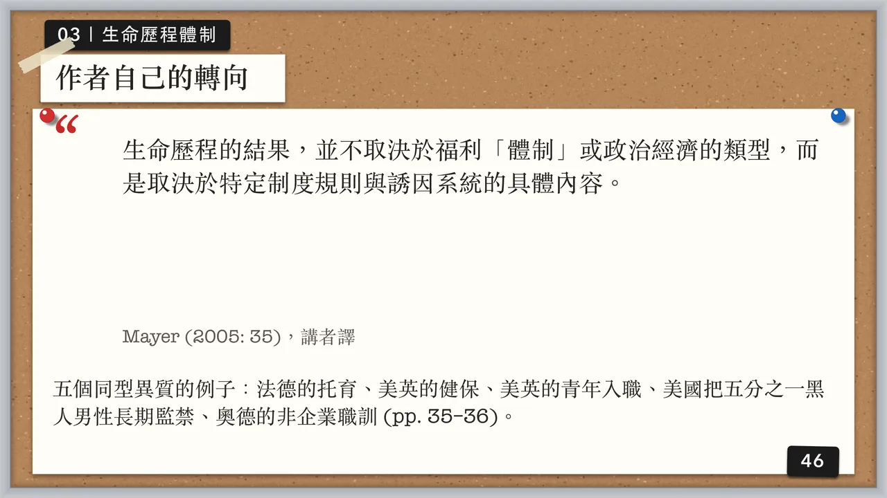
原文 (p. 35)：However useful such overviews might be as interpretative summaries, life course outcomes are not conditioned on welfare 'regimes' or varieties of political economies, but rather on the concrete specifics of particular institutional rules and incentive systems (Blossfeld 2003). Therefore, aggregating countries must introduce ambiguities that undermine the uses of such schemata in developing causal hypotheses about life course outcomes.
監禁的例子 (p. 36)：the United States is unique in incarcerating a fifth of its male black population for a considerable time of their young adult years（引 Pettit & Western 2004）。這是全章唯一把刑事司法當成生命歷程制度處理的地方。
方法論結論 (p. 36)：there is no alternative than to resort to the level of particular countries and particular institutions.
「制度」與「體制」只差一個字，很容易混淆。institution 是具體規則，例如稅制單位是個人還是家戶。regime 是這些規則被假定形成的群集。作者的主張是往 institution 走，別停在 regime。
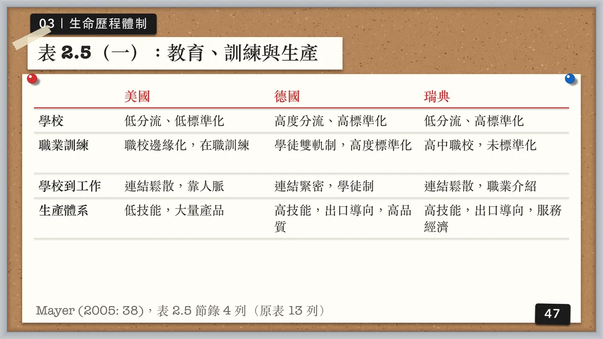
原表 13 列，跨兩頁。這一頁取前段的 4 列，下一頁取後段的 3 列。
職業訓練原文：美國 Marginalized Vocational School, On-the-Job Training。德國 Apprentice/Vocational School, Dual System, Highly Standardized, Employer/Union Coordinated。瑞典 Vocational School (Upper Secondary), Unstandardized, Uncoordinated。
值得停的一格：瑞典的職業訓練是未標準化、未協調，積極勞動市場政策卻是高。瑞典的協調發生在勞資關係與勞動市場政策上，不在職訓體系上。
這張表的用法：每一列都對得上一個生命歷程轉銜。學校分軌對應離開養成期的年齡變異，職訓標準化對應入職的協調程度，學校到工作的連結對應入職是否順暢。
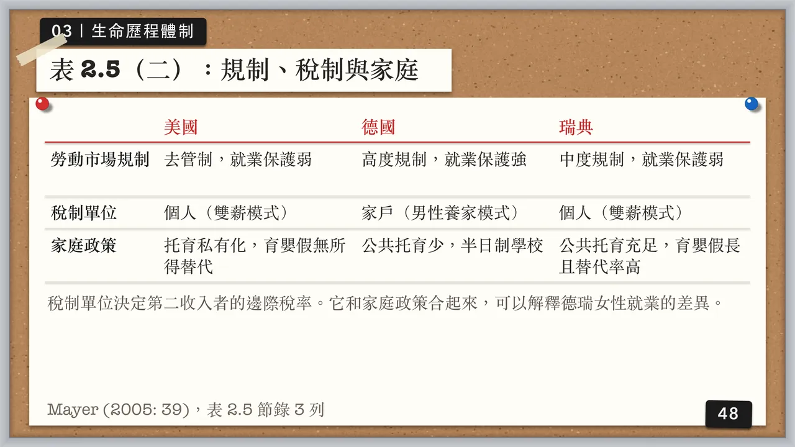
稅制一列原文是 Unit = Individual (Dual Earner Model) 與 Unit = Household (Male-Breadwinner Model)。稅負水準：美國低、德國中等、瑞典高。
家庭政策一列原文：美國 No Family Allowance; Privatized Child Care; Short, Job Protection; Zero Income Replacement。德國 Direct Cash Transfer – Entitled to Household Head; Low Public Childcare, Half-day Schooling; Short Income Replacement; Long Job Protection。瑞典 Direct Cash Transfer to Child; Strong Public Provision of Childcare; Long/Generous Income Replacement and Job Protection。
這一頁是「以制度變項取代國名」的示範：稅制單位這一格是一條具體規則，可以直接連到表 2.6 的女性生涯那一列。05 節會用同一個問題問台灣。
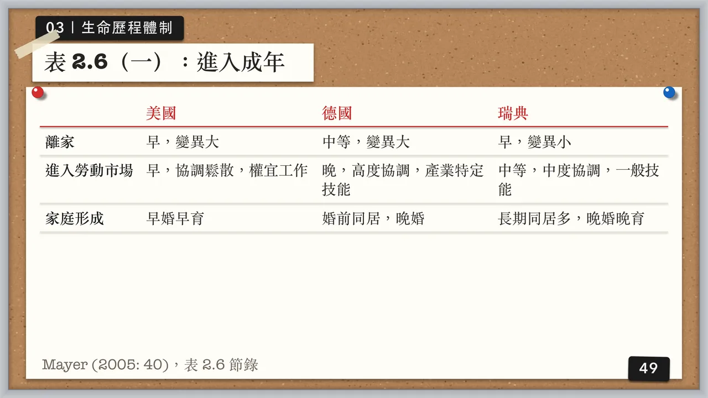
原表 12 列，分兩頁節錄 6 列。略去的是離開學校與訓練的年齡、經濟自立、換工作、工作生涯的階級流動、就業與失業、家庭生命歷程。
家庭形成原文：美國 Early Entry into Marriage/Parenthood。德國 Cohabitation Before Marriage, Delayed Entry into Marriage/Partial Parenthood。瑞典 High Permanent Cohabitation, Delayed Entry into Marriage/Parenthood。
作者的做法 (p. 36)：跨越兩表的順序，有選擇地把特定制度連到特定行為，藉此提出具體的因果連結。「有選擇地」是關鍵：十三項制度與十二項結果之間的配對，是敘述性的選擇，不是系統的配對。
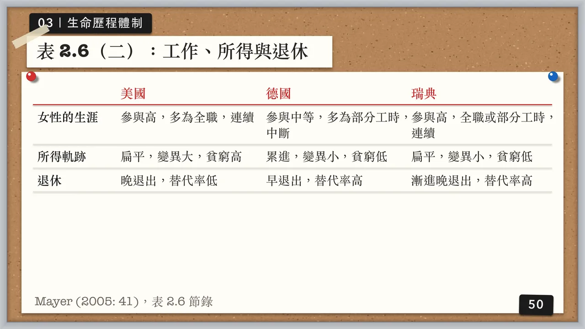
女性生涯原文：美國 High Participation, High Qualifications, Mostly Full Time, Continuous。德國 Medium Participation, Medium Homogeneous Qualifications, Mostly Part Time, Interrupted。瑞典 High Participation, Low Variance, High Qualifications, Full Time/Part Time, Continuous。
所得軌跡原文：德國 Progressive, Low Variance, (Low) Poverty，貧窮一格原文有括號。
退休原文：美國 Late Exit, High Variance, Low Replacement, High Inequality in Old Age。德國 Early Exit, Low Variance, High Replacement, Medium Income Inequality。瑞典 Gradual Late Exit, Medium Variance, High Replacement, Low Income Inequality。
把這一頁和表 2.5（二）並讀：德國的家戶稅制與少量公共托育，對應女性部分工時與中斷的生涯。
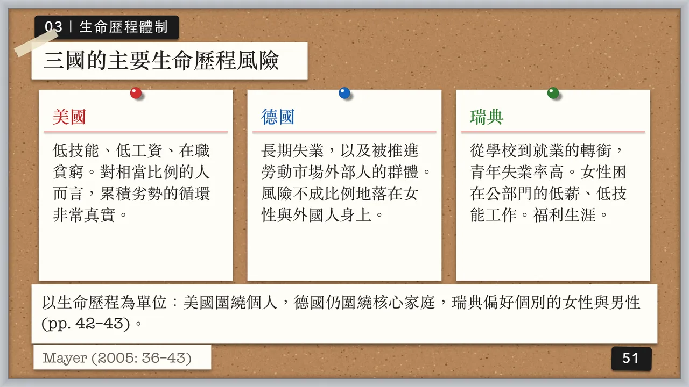
美國 (pp. 36–37)：主要風險是 low skills, low wages, and being working poor—below or close to the poverty level。For a considerable proportion of people, the threat of a cumulative cycle of disadvantage is very real.
德國 (pp. 37–42)：主要風險是 long-term unemployment and being pushed into the group of labor market outsiders。主要是年長工作者被解僱，並可在 60 歲從失業轉入提早退休。高教育女性呈現二元行為：高度生涯投入而無子女，或退出生涯而有兩個子女（引 Huinink 1995）。
瑞典 (p. 42)：作者另引 Korpi & Mertens (2003)，他們挑戰了「德國雙軌制比瑞典更能整合勞動市場」的傳統看法。
瑞典的單位 (p. 43)：not least through its tax system and by shifting some of the burdens of women's caring work to public social services。
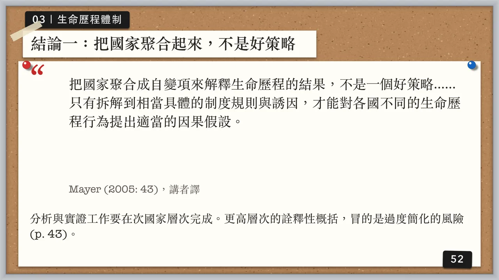
原文 (p. 43)：One conclusion from this discussion seems inescapable: Aggregating on the side of countries as independent variables in explaining and understanding life course outcomes is not a good strategy. Although summary interpretative contrasts between, say, liberal countries like the United States or the UK, and conservative-corporatist countries like Germany and the Netherlands may be useful, the aggregation into families of countries, in general, does not facilitate the identification of the underlying mechanisms. Also, for given countries only disaggregating between fairly specific institutional rules and incentives make it possible to formulate adequate causal hypotheses about nationally variable life course behavior. In other words, the analytical and empirical work has to be accomplished on the subnational level ...
「次國家層次」指什麼（地區、產業、職業，還是制度規則本身），本章沒有說清楚。
這一句與 Leisering (2003: 216) 的判斷同向：體制分類在總體層次可用，在政策領域層次常常失效。
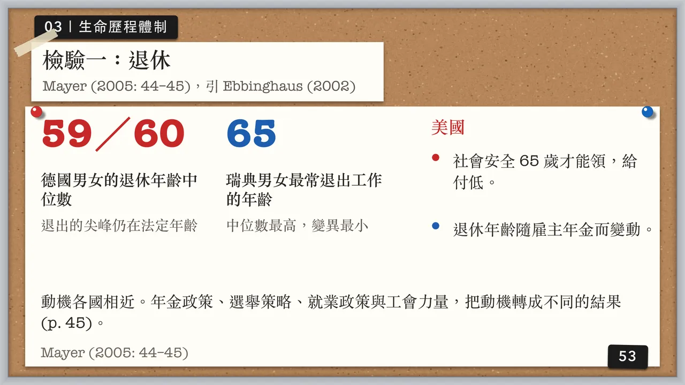
德國 (p. 44)：工會與雇主協會共謀把經濟重整的成本外部化，強力支持年金減額很低的法定提早退休。政府開放 59 歲以上的年長失業者領取老年年金以壓低失業數字。註 8 (p. 49)：幾乎所有符合資格者都利用了這個誘因，失業卻沒有因此減少多少。
原文 (p. 44)：Despite upward changes in the legal ages of retirement, this policy resulted in a median age of retirement of 59 for men and 60 for women. The probabilities of exiting from work, however, still peak at legal ages, that is, 63 and 65 for men and 60 and 63 for women.
瑞典 (p. 45)：Both men and women have the highest probability of exiting from work at age 65. In Sweden part-time, partial retirement was popular and reached up to a quarter of all eligible workers, although it is gradually being phased out.
美國 (p. 45)：社會安全作為基礎年金給付低且 65 歲才能領，實際退休年齡隨能否取得雇主控制的私人年金而大幅變動。60–64 歲的就業水準與瑞典相當或更高，65 歲以上高出甚多。美國是唯一以法定年齡規則逆轉提早退休趨勢的國家。
這是本章對「制度如何運作」最清楚的機制說明：動機一致，結果不同，差別在制度。
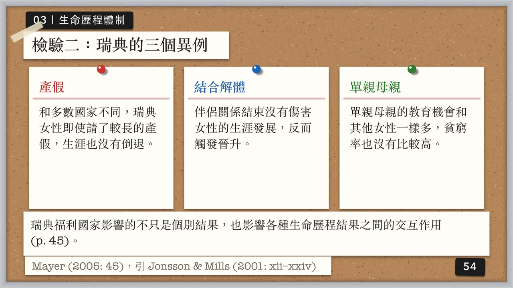
原文 (p. 45)：Swedish women, in contrast to most other countries, do not suffer career setbacks even after relatively extended periods of maternity leave ... union dissolution does not seem to impact negatively on women's career development—but, in fact, it has the opposite effect of triggering career advancement ... single mothers in Sweden do enjoy just as many educational opportunities as other women and do not experience higher rates of poverty.
這三項不是「效果較小」，而是懲罰不成立，甚至符號相反。同一個生命事件在不同制度下的後果可以反過來。
可以連到 Leisering (2003: 213) 的機制：制度不只在事件發生後補償，也在事件發生前改變人們對後果的預期。
DiPrete 的設計是把兩件事分開：社會容許成員暴露於何種風險，以及遭遇不利事件後提供何種協助與補償。
原表 6 列，這裡節錄 4 列，並精簡格內文字。結合解體一列原文另有：福利保護美弱、德中、瑞強，女性勞參美高、德低、瑞高，再結合率美中、德中、瑞快。失業一列另有：德國是內外部人勞動市場、沒有第二收入者。
三國的整體判讀 (p. 47)：德國有運作良好的制度防止所得或身分損失，但損失一旦發生，只部分補償。瑞典容許負面事件以較高比率發生（家庭領域多、勞動市場少），但很有效地以支持勞動市場整合來補償所得損失。美國既不太保護人免於不利事件，也不太在需要時提供協助。
原文 (p. 47)：The rate of union dissolution is lower than in either the United States or Sweden, but—surprisingly—welfare losses are relatively higher after divorce. Although court settlements are relatively generous, they cannot offset (or might even counteract) the advantages of high employment participation.
第三點是講者的推論，依據是作者的解釋。
右欄原文：an encouraging demonstration that by focusing on individual countries, cross-national life course research does not have to lead to the impasse of a multitude of unrelated studies ... Both the assumption of a unidirectional effect of highly differentiated institutions and policies and the assumption of meaningful mobility and life course regimes might be possible to salvage. 動詞是 salvage，搶救，不是證實。
三項答覆的原文 (p. 48)：①Aggregating countries into typologies or regimes might be defensible as shortcuts to interpretation but is more misleading than useful in developing and testing hypotheses about causal linkages. ②Nationally varying institutional arrangements need to be disaggregated and matched to specific life course outcomes. ③... researchers can observe nonrandom, systematic patterns of association. This allows social scientists to retain the idea of country-specific life course regimes at least as a fruitful heuristic in further studies.
引用時要帶上 at least as a fruitful heuristic 這個限定，否則會把本章讀成支持體制概念的文獻。
作者自承的漏洞（全章最後一句）：本章忽略了國家內部的制度變遷。但納入它只會更支持「國內特定性」的主張。
與 Leisering 對照：Leisering 說只能在相當的保留下主張 (2003: 215)，Mayer 說保留為啟發式。兩位主要使用者都不認為這個概念能承擔因果檢驗。
第一題：可以從稅制單位、家庭政策、學校到工作的連結、勞動市場規制想起。05 節會給台灣的稅制與育嬰留職停薪條文。
第二題：Mayer 的答案很明確，但明確不等於沒有爭議，因為兩種做法的政治可行性完全不同。
第三題：若把國家聚合成體制不是好策略，「東亞福利體制」作為解釋生命歷程結果的單位，也要先證明制度側構成體制（第 6 項要求）並且穩定（第 7 項要求）。東亞各國的制度變遷速度更快，證明責任更重。
第四節
A bottom-up test: life course regimes in Europe
這一節要回答 從個人就業史出發，分出來的類型會和福利體制一樣嗎？
本節文獻 Möhring (2016: 124–139)
Möhring, K. (2016). Life course regimes in Europe: Individual employment histories in comparative and historical perspective. Journal of European Social Policy, 26(2), 124–139.
這是 Mayer 第五節那個問題的實證嘗試：生命歷程體制的假定能不能維持？方法是序列分析加分群。
p. 124：The construction of typologies in comparative welfare state analyses and their application in individual-level research normally follows a top-down approach ... This study chooses a contrary approach and uses micro-level information on life histories of individuals in 14 European countries.
理論基礎是生命歷程政策的概念 (p. 125)，引 Kohli (2007)、Leisering (2003)、Mayer (2001, 2005)。
作者說這是第一份涵蓋多個歐洲國家、代表不同福利安排、性別體制與歷史發展的個人生命史分析 (p. 125)。
p. 131：12,680 名受訪者，20 到 65 歲。出生世代 1908 到 1944 年，多數在 1925 到 1943 年之間（第 10 與第 90 百分位）。就業史主要涵蓋 1945 到 2009 年。
非典型指部分工時與定期受僱。未就業包括失業、退休與其他未就業。家庭照顧被當成一種勞動市場狀態，所以家庭領域也間接納入 (p. 125)。
回溯資料可能低估狀態之間的不一致與轉換，SHARELIFE 用了幾種工具增強受訪者的傳記記憶 (p. 131)。
東德與西德分開處理。東德到 1990 年為德意志民主共和國 (p. 125)。
三個指標的意義 (pp. 126–127)：標準化代表一國以連續正規就業為導向的程度，也就是正常工作傳記的盛行，同時是國家規制程度與經濟發展階段的指標。波動是不穩定的跡象，也反映生命歷程政策提供的彈性。異質性顯示多樣性，也可能是不平等，因為它可能是勞動市場區隔的跡象，也可能是允許多元選擇的政策。
標準化與波動是在個人層次算出、再聚合成國家平均。異質性本身就是國家層次的指標 (pp. 131–132)。
最適配對的技術附錄在 p. 139：用對稱的成本矩陣，依勞動市場整合程度為各狀態排序，計算每個人的就業史與「正常傳記」的距離，再反向編碼。
分群方法：Ward 法的階層分群，三個指標分性別納入 (p. 132)。註 5：平均連結法與單一連結法的敏感度分析也得到相同結果，五群解有最大的 Duda–Hart 停止規則值。
彈性的標準化 (p. 134)：勞動市場整合很高，同時生涯波動與異質性也高。和捷克一樣，傳記的性別平等程度高。
性別化的高標準化 (p. 134)：女性常在家庭照顧後重返勞動市場，所以波動相對高，或以部分工時補貼家用。
異質的中度標準化 (pp. 134–135)：男性的生涯比第三群更彈性、更異質。女性的波動略低，呈現持續工作與持續照顧的兩極。
希臘與西班牙 (p. 135)：只有少數人連續正規受僱，自僱很重要，女性主要從事家庭照顧，男性的未就業比例高。就業史很穩定、同質，多半維持最初的勞動市場位置。
表 2（p. 133）列出各國三個指標的標準化值與原始值。
保守體制的分歧 (p. 135)：比利時、法國、義大利的經濟發展較不穩定，工業現代化部分延遲。另一個原因是性別角色模式不同：性別化的高標準化群以男性養家模式為主，中度標準化群的女性較以工作為導向。
後社會主義 (pp. 135–136)：波蘭的工業化較慢、農業為主，就業史有高比例的自僱（推測是小農）與較破碎的生涯。捷克有長期高度發展的工業傳統。東德介於兩者之間，部分反映統一後向西德體系靠攏。
南歐 (p. 135)：希臘、西班牙反映政治與制度的高度不穩定、公共社會基礎設施的缺乏與經濟現代化的延遲。義大利女性的勞動市場參與較高、生涯較彈性。
p. 136 原文：The fact that the life course regimes deviate from common welfare state typologies can be interpreted in two ways. First, it is a sign that the latter provide a rather static view on social policy because they neglect long-term historical developments, especially regarding the early welfare state expansion phase in the post-war decades. Second, it demonstrates that individual behaviour and biographies show much more diverse patterns than a policy-oriented typology can encompass.
政策意涵 (p. 136)：國家規制與個人生活的關係是雙面的。廣泛的規制可能限制個人，因為它依正常工作傳記把生涯標準化。所得保障與社會服務也讓人脫離市場力量與照顧責任，因而能更彈性地選擇生涯。國家介入與經濟發展都不足（性別化的低標準化）與規制和規範模塑過嚴（性別化的高標準化），都產生高度的性別不平等。支撐個人彈性、而不是把生涯標準化的福利國家，不平等較低，生命歷程也更以工作為導向。
頁尾那一句是講者的綜合：兩人都不支持把國家聚合當成因果單位。
第五節
East Asia: productivism and Taiwan
這一節要回答 東亞是不是自成一型？
本節文獻 Holliday (2000: 706–723)；官方統計與法規
Holliday, I. (2000). Productivist welfare capitalism: Social policy in East Asia. Political Studies, 48(4), 706–723.
這一節分三段：先讀 Holliday 的第四個世界，再用 Mayer 的方法論警告檢查它，最後用兩組台灣證據回答本節的問題。
第一組證據是 2024 年六國按年齡的勞動參與率。第二組是台灣幾項制度的法規條文。
Holliday 的論證 (p. 708)：Esping-Andersen 只看「受社會政策深刻影響、足以稱為福利國家」的資本主義國家。這個限制是任意的，排除了那些也做社會政策、但讓它從屬於其他目標的國家。從屬與否應該當成第四個判準。
原文 (p. 708)：In the fourth, productivist world of welfare capitalism ... social policy is strictly subordinate to the overriding policy objective of economic growth. Everything else flows from this: minimal social rights with extensions linked to productive activity, reinforcement of the position of productive elements in society, and state-market-family relationships directed towards growth.
表 1 原文的格子（p. 709）：自由的階層化效果是 Equality of poverty for minority; market-differentiated welfare for majority。社會民主是 Universal benefits graduated according to accustomed earnings，國家市場家庭一欄是 Market crowded out; family socialized。表中格子為講者精簡。
表 1 的主導特徵：自由＝市場，保守＝身分，社會民主＝福利，生產主義＝成長。四者都是理念型，沒有現實案例完全符合。
三個子型 (pp. 709–710)：促進型與自由主義型有共同點，但有壓倒性的成長承諾。發展普及型把部分社會權延伸給生產性人口，國家在市場與家庭之外以若干普及方案支撐。發展特殊型幾乎沒有社會權，國家指導家庭的福利活動。
日本 (pp. 711–712)：1955–75 年高成長期，政府社會福利支出穩定在 GNP 的約 2%（引 Goodman & Peng 1996）。不是純粹的發展普及型，因為部分社會權已延伸到生產性群體之外。
韓國 (p. 713)：比日本更純粹的發展普及型。1988 年國民年金的主要目的之一是成長期的資本動員。
新加坡 (pp. 712–713)：中央公積金 1953 年創設、1955 年實施，個人權益不超過個人提撥加利息。
差異 (p. 714)：日韓台以社會保險為主，新加坡是強制個人儲蓄，香港是某種殘補的普及主義。香港與（當時的）台灣沒有公共年金。
原文 (pp. 713–714)：Taiwan is also a developmental-universalist state, though here the contingent fact of immediate secession from the People's Republic of China means that the military has always featured prominently in social programmes ... the Military Servicemen's Insurance Law of 1953 ... remained very limited until the emergence of democracy in 1987.
1991 年的數字是 Holliday 轉引 Ku (1995: 355–359)：those groups which are seen as most closely related to the stability of the Taiwanese state (the military, state bureaucrats and teachers) have received the lion's share of central government welfare expenditure: 75 percent in 1991 for a total of 9 percent of the population. Meanwhile, 'the disadvantaged' (the poor, handicapped, young, aged and women) have received next to nothing: 3 percent in 1991.
全民健保 (p. 714)：引 Ku (1998: 119)，the most significant welfare effort by the Taiwanese state in the post-war era。國民年金 (p. 714)：A national pension scheme should soon come on stream, though the economic crisis of the late 1990s may delay it.
這篇寫於 2000 年。之後台灣的發展（例如國民年金）要用其他資料補，本頁不延伸。
這一頁把兩個常被混用的詞分開。
生產體制的出處：Mayer (2005: 30–33) 的資本主義多樣性一節，以及 Hall & Soskice (2001)。
Peng (2012: 240) 原文：the lack of state welfare support in Japan and Korea prior to the 1990s could be explained by their employment regime which provided job protection for many workers in the less productive sectors of the economy ... employment legislations and practices served as functional equivalents of welfare state support（引 Estévez-Abe 2008 等）。Peng (2012) 是第 10 週的延伸閱讀。
Holliday 也提到勞資關係：國家與資本常一起推動企業層級的統合主義，削弱工會動員，也減少國家介入的需要 (p. 717)。
Mayer 的第 6、7 項要求（制度側構成體制，且夠穩定），在東亞比在歐洲更難通過，因為制度變遷的速度更快。這是講者的延伸，不是 Mayer 的原話。
Holliday (p. 711) 原文：East Asian societies retain a strong conception of the family, which therefore looms large in welfare provision in all five states. This is an entirely contingent feature of productivist welfare capitalism in contemporary East Asia. It will not necessarily be found elsewhere.
Holliday 的解釋框架 (pp. 716–720)：不找單一原因，要同時看單元層次（尤其是官僚政治）與體系層次（世界市場、冷戰與區域威脅）。他修正了 Katzenstein 的論點：小型開放經濟只有在脆弱性屬於中等程度時才有利於福利國家發展。
資料：2024 年勞動力參與率（%）。台灣取自主計總處《113年人力資源調查統計》表 8 的「113年平均」。日本、韓國、瑞典、德國、美國取自 OECD 資料集 OECD.ELS.SAE, DSD_LFS@DF_LFS_INDIC。台灣女性：25–29 歲 89.8，40–44 歲 80.3，50–54 歲 68.1，55–59 歲 49.0，60–64 歲 29.4。
60–64 歲女性：台灣 29.4，美國 52.5，韓國 56.2，德國 64.4，日本 66.6，瑞典 72.3。台灣最低。
東亞實線、西方虛線，台灣加粗。
可比性提醒：瑞典的 65 歲以上只含 65–74 歲。美國的 15–19 歲是 16–19 歲。台灣只算本國籍人口，台灣、韓國、美國不含軍人。日本的 OECD 值和日本官方值最多差 0.37 個百分點。資料的查詢網址見第 90 頁「資料來源」。
55–59 歲男性：台灣 76.2，美國 79.2，韓國 87.5，德國 88.6，瑞典 92.9，日本 93.4。台灣最低。
60–64 歲男性：台灣 55.0，美國 64.4，德國 72.8，韓國 75.7，瑞典 76.5，日本 86.6。台灣最低。
65 歲以上男性：德國 12.5 比台灣 14.3 低，所以不能說台灣在 65 歲以上最低。
20–24 歲男性：台灣 62.0，韓國 42.0。兩國都不把軍人算進勞動力與人口，服役中的役男不在分母裡。
可比性提醒：瑞典的 65 歲以上只含 65–74 歲。美國的 15–19 歲是 16–19 歲。台灣只算本國籍人口，台灣、韓國、美國不含軍人。日本的 OECD 值和日本官方值最多差 0.37 個百分點。資料的查詢網址見第 90 頁「資料來源」。
第三點是講者對兩張圖的讀法。日本與韓國的高齡男性勞參率接近或高於西方三國，台灣則低於西方三國。女性的中年曲線，日韓台三種形狀不同。
第四點：橫斷面的年齡曲線不是同一群人的一生。台灣女性 55–64 歲的低勞參率，有一部分是較早世代的教育與就業經驗。要分開年齡與世代，需要跨年的資料（第 4 週的年齡、時期、世代）。
右欄接第 5 週講義的台灣小節：勞保老年給付請領年齡逐步提高、強制退休與勞退的年齡各自不同。這裡只並列制度與行為，不主張兩者的因果。
就業保險法第 16 條第 1 項（逐字）：失業給付按申請人離職辦理本保險退保之當月起前六個月平均月投保薪資百分之六十按月發給，最長發給六個月。但申請人離職辦理本保險退保時已年滿四十五歲或領有社政主管機關核發之身心障礙證明者，最長發給九個月。
同條第 2 項：經濟不景氣致大量失業等情事，可延長到最長九個月，必要時再延長，最長不得超過十二個月。該條最新修正為 98 年 4 月 22 日公布、98 年 5 月 1 日施行。
網址：https://law.moj.gov.tw/LawClass/LawSingle.aspx?pcode=N0050021&flno=16
社會救助法第 5 條第 1 項（逐字）：第四條第一項及前條所定家庭，其應計算人口範圍，除申請人外，包括下列人員：一、配偶。二、一親等之直系血親。三、同一戶籍或共同生活之其他直系血親。四、前三款以外，認列綜合所得稅扶養親屬免稅額之納稅義務人。第 3 項另有九款不列入的情形，例如未共同生活且無扶養事實的特定情形。該條最新修正為 99 年 12 月 29 日公布、100 年 7 月 1 日施行。
網址：https://law.moj.gov.tw/LawClass/LawSingle.aspx?pcode=D0050078&flno=5
條文取自全國法規資料庫，法規整編資料截止日為民國 115 年 9 月 24 日。
所得稅法第 15 條第 1 項（節錄）：自中華民國一百零三年一月一日起……除納稅義務人與配偶分居，得各自依本法規定辦理結算申報及計算稅額外，應由納稅義務人合併申報及計算稅額。第 2 項三款擇一：各類所得合併計算、薪資所得分開計算、各類所得分開計算。104 年 1 月 21 日修正公布，自 103 年度適用（財政部中區國稅局說明）。
網址：https://law.moj.gov.tw/LawClass/LawSingle.aspx?pcode=G0340003&flno=15
性別平等工作法第 16 條第 1 項（逐字）：受僱者任職滿六個月後，於每一子女滿三歲前，得申請育嬰留職停薪，期間至該子女滿三歲止，但不得逾二年。網址：https://law.moj.gov.tw/LawClass/LawSingle.aspx?pcode=N0030014&flno=16
就業保險法第 19 條之 2 第 1 項：以育嬰留職停薪當月起前六個月平均月投保薪資百分之六十計算，每一子女合計最長發給六個月。111 年 1 月 18 日起刪除「父母不得同時請領」的規定。網址：https://law.moj.gov.tw/LawClass/LawSingle.aspx?pcode=N0050021&flno=19-2
育嬰留職停薪薪資補助要點第五點：按平均月投保薪資百分之二十計算，與育嬰津貼合併發給。勞動部 110 年 6 月 4 日訂定，110 年 7 月 1 日生效。合計八成的說法出自勞動部新聞稿，要點本文沒有「八成」字樣。網址：https://laws.mol.gov.tw/FLAW/FLAWDAT0202.aspx?id=FL096621
以日為單位申請育嬰留職停薪，規定在育嬰留職停薪實施辦法第 2 條，不在性平法第 16 條。
第一題：要留意橫斷面與世代的問題。也可以回到 Mayer 表 2.5 的稅制單位與家庭政策兩列。
第二題：關鍵仍是 Leisering 的要件，要有可考的政治意圖。四項規則本身都不足以證明意圖。
第三題：Holliday (pp. 720–721) 原文：they will almost certainly do so within a productivist perspective ... productivism will remain the name of the game。2000 年之後台灣的國民年金、長照、育兒政策，是不是都在生產主義的視野之內，值得辯論。
第六節
The life course as a framework for social investment
這一節要回答 把生命歷程當成政策架構，評估方式要怎麼改？
本節文獻 Kvist (2015: 131–149)
Kvist, J. (2015). A framework for social investment strategies: Integrating generational, life course and gender perspectives in the EU social investment strategy. Comparative European Politics, 13(1), 131–149.
背景是 2013 年歐盟的社會投資套案。作者想替原本分散的兒童、教育、就業、健康、長照與社會包容政策，建立一個共同架構。
用丹麥、德國、義大利、波蘭、英國五國說明，資料跨 2010–2013 年。沒有迴歸或因果識別，是描述性的比較。
世代 (p. 135)：the welfare state smoothes resources over the life course and act as a piggy bank for the individual（引 Barr 2001）。This horizontal redistribution of resources to oneself over the life course contrasts with vertical redistribution of resources from the rich to the poor, from the healthy to the ill, from childless persons to families and from workers to workless.
這和 Leisering (2003: 209) 的判斷同向：多數福利國家以生命歷程內的重分配為主，目標是安全。
世代契約也把再生產放在核心：工作世代支持兒童與退休者，兒童日後成為支持前一世代的工作者。作者把生育足夠子女寫成世代應盡之事，帶有強烈的生產主義與人口規範色彩，這一點可以批判地讀。
生命歷程 (pp. 136–137)：政策的目標不是把所有人推回一條標準路徑，而是讓人形成自己的路徑。
圖 2 在 p. 138。這張圖常被讀成「成年後的投資都無效」，作者沒有這樣說。
早期投入提高後期生產力的說法，引 Heckman (2006)。Heckman 這篇是第 8 週的延伸閱讀。
和 Leisering 的三場域對照：Kvist 的政策清單幾乎涵蓋教育、年金以外的整個風險管理場域，並把托育與長照放進來。
原文 (p. 139)：The share of children below 3 years in formal care in 2011 who come from the poorest income quintile is 0 per cent in Poland, 17 per cent in Italy, 20 per cent in the United Kingdom, 21 per cent in Germany and 87 per cent in Denmark (European Commission, 2013d). In comparison, the coverage rate for children in the richest families is 4 per cent in Poland, 23 per cent in Germany, 28 per cent in Italy, 53 per cent in the United Kingdom and 83 per cent in Denmark.
原文兩句的國家順序不同，圖依國家對齊。
同頁：No country succeeds in reaching out to all children in relatively poor families, but Denmark is performing notably better than other EU countries.
這是服務使用率，不是資格或品質。普及的名義不保證弱勢家庭用得到。下週 Van Lancker & Ghysels (2016) 用 31 國資料解釋這種不平等。
原文 (p. 144)：In Denmark mothers aged from 25 to 49 with children below 12 work 1.6 percentage points more than women of the same age without children. In the other countries mothers work considerably less than non-mothers: in Italy the difference is 8.6, in Poland 11.6, in the United Kingdom 16.4 and in Germany no less than 18.4 percentage points ... The employment rate of fathers is considerable higher than for men without a child, namely 6.9 percentage point in Germany, 7.1 in the United Kingdom, 10.4 in Denmark, 10.6 in Poland and 11.4 in Italy.
托育時數 (p. 145)：In Denmark 87 per cent of children are in care 30 hours or more ... In Germany the similar figures are 44 and 46 per cent and in the United Kingdom they are 27 and 66 per cent. In Italy 17 per cent ... There are no reliable data for Poland.
讀法：覆蓋率會遮蔽時數。同樣「有用托育」，不一定提供全職工作的條件。
和 Mayer 表 2.5 的家庭政策一列對照：德國的半日制學校與公共托育少，正好對應這裡德國母親最大的就業差。
五個優點見 p. 146：it is interdisciplinary, sensitive to social and structural change, stresses population diversity, acknowledges the dynamic and multi-dimensional nature of social issues and of social investments, and has high policy relevance.
限制：五國不是隨機選出的代表樣本，指標之間沒有時間落差或共同原因的控制。北西優於南東，可能同時反映景氣、產業、財政與制度歷史。作者也承認，金融危機後最需要改革的國家往往最缺財政與執行能力。
右欄：Leisering (2003: 217) 寫 the United States emphasizes social investment，以及瑞典 combines extensive redistribution with social investment and activation。那時社會投資還不是一個典範。Leisering (2003: 222) 另外提到 Esping-Andersen (2002) 為歐盟輪值主席國寫的藍圖，明確以生命歷程為社會政策的參照軸。那本書的第 2 章是下週的核心閱讀。
六點對應六節。
第六點的依據是 05 節的兩張勞參率圖：2024 年 60–64 歲男性，日本 86.6%、韓國 75.7%、台灣 55.0%。女性 55–64 歲，台灣在六國中最低。
第一題依據：05 節兩張勞參率圖，以及 Mayer (2005: 48) 對國家聚合的警告。Holliday (2000) 把五地放進同一個世界，但他自己也承認內部差異明顯。
第二題依據：Leisering (2003: 210, 222–223)。
第三題依據：Leisering (2003: 214) 的年金四條件，Mayer (2005: 38–39) 的表 2.5。並列制度與行為，不代表已證明兩者的因果。
依課綱：第 8 週（11 月 3 日）主題是「幼年期：早期兒童發展、兒童照顧與社會投資」。
核心閱讀：Esping-Andersen, G. (2002). A child-centred social investment strategy. In Why We Need a New Welfare State (pp. 26–67)。Van Lancker, W., & Ghysels, J. (2016). Explaining patterns of inequality in childcare service use across 31 developed economies: A welfare state perspective. International Journal of Comparative Sociology, 57(5), 310–337。
延伸：Heckman (2006)、Peng (2011)、Lan (2014)。
銜接：Leisering (2003: 222) 把 Esping-Andersen (2002) 讀成以生命歷程為參照的歐洲新福利建築。Kvist (2015: 139) 的托育使用率按所得分，就是下週要解釋的現象。
Leisering 一章的頁碼依 PDF 換算：書頁＝PDF 頁減 21。正文到 p. 223。
Mayer 一章：書頁＝PDF 頁減 19。版權頁印 © 2005、Original Printing 2005。DOI 的 Crossref 紀錄出版日為 2007 年 1 月 5 日。
Esping-Andersen：本講的頁碼依 Polity 版的 PDF（書頁＝PDF 頁減 8）。
三篇都是期刊論文，頁碼為期刊頁。
Kohli (2007) 是第 5 週的核心閱讀，Peng (2012) 是第 10 週的延伸閱讀。Mayer (2009) 是第 3 週的閱讀。
網址：
主計總處 113 年人力資源調查統計年報：https://www.stat.gov.tw/News_Content.aspx?n=4001&s=234885 ，表 8 Excel：https://ws.dgbas.gov.tw/001/Upload/463/relfile/11516/234727/table8.xlsx
所得稅法第 15 條：https://law.moj.gov.tw/LawClass/LawSingle.aspx?pcode=G0340003&flno=15
性別平等工作法第 16 條：https://law.moj.gov.tw/LawClass/LawSingle.aspx?pcode=N0030014&flno=16
就業保險法第 16 條：https://law.moj.gov.tw/LawClass/LawSingle.aspx?pcode=N0050021&flno=16
就業保險法第 19 條之 2：https://law.moj.gov.tw/LawClass/LawSingle.aspx?pcode=N0050021&flno=19-2
社會救助法第 5 條：https://law.moj.gov.tw/LawClass/LawSingle.aspx?pcode=D0050078&flno=5
育嬰留職停薪薪資補助要點：https://laws.mol.gov.tw/FLAW/FLAWDAT0202.aspx?id=FL096621
可比性：瑞典的 65 歲以上只含 65–74 歲，美國的 15–19 歲是 16–19 歲，台灣只算本國籍人口，台灣、韓國、美國不含軍人。日本的 OECD 值與日本官方值最多差 0.37 個百分點。
Leisering (2003) 的轉引另見各頁講解：Elder (1991, 1999)、George (1993)、Gough et al. (1997)、Kohli (1987)、Myles & Quadagno (1997)、Settersten (1999)、Zhou & Hou (1999)。
Mayer (2005) 的轉引另見各頁講解：Blossfeld (2003)、Huinink (1995)、Korpi & Mertens (2003)、Pettit & Western (2004)。Mayer & Müller (1986) 本講只引 Mayer (2005: 22) 的轉述。
Esping-Andersen (1990) 的轉引：Fausto (1978)，見講解。Holliday (2000) 另轉引 Goodman & Peng (1996)、Ku (1998)。Kvist (2015) 另轉引 Barr (2001)。